Jianlan Luo(jianlanluo@berkeley.edu), Charles Xu(xuc@berkeley.edu).
Abstract
강화학습(Reinforcement learning, RL)은 복잡한 로봇 조작 기술을 자율적으로 습득할 수 있게 하는 큰 가능성을 품고 있지만, 실제 환경(real-world)에서 이러한 잠재력을 실현하는 것은 매우 도전적인 과제였다. 본 논문에서는 동적 조작, 정밀 조립, 양팔 협업을 포함한 다양한 정밀 조작 작업에서 뛰어난 성능을 보여주는 인간 참여형(human-in-the-loop) 비전 기반 RL 시스템을 제시한다. 본 접근법은 데모(demonstration)와 인간의 교정(correction), 효율적인 RL 알고리즘, 그리고 기타 시스템 수준의 설계 선택을 통합하여 단 1~2.5시간의 훈련만으로 거의 완벽한 성공률과 빠른 사이클 타임을 달성하는 정책을 학습한다. 본 방법은 모방 학습(imitation learning) 베이스라인 및 기존 RL 접근법을 크게 능가하며, 성공률은 평균 2배 향상되고 실행 속도는 1.8배 빨라졌음을 보여준다. 광범위한 실험과 분석을 통해 본 접근법의 효과에 대한 통찰을 제공하고, 반응형(reactive) 및 예측형(predictive) 제어 전략 모두에 대해 어떻게 강건하고 적응력 있는 정책을 학습하는지 보여준다. 본 결과는 RL이 실제 환경에서 실용적인 훈련 시간 내에 직접 다양하고 복잡한 비전 기반 조작 정책을 실제로 학습할 수 있음을 시사한다. 본 연구가 산업적 응용과 연구 발전 모두에 기여하여 새로운 세대의 학습 기반 로봇 조작 기술에 영감을 주기를 기대한다. 비디오와 코드는 프로젝트 웹사이트 https://hil-serl.github.io/에서 확인할 수 있다.
1 Introduction
조작(Manipulation)은 로봇 공학의 근본적인 문제 중 하나이며, 동적이고 정교한 조작 작업에서 인간 수준의 성능을 달성하는 것은 이 분야의 오랜 숙원이다 Cui and Trinkle [2021]. 강화학습(RL)은 복잡하고 정교한 로봇 기술의 자율적 습득을 가능하게 할 것이라는 기대를 모으고 있다. 시행착오를 통한 학습을 통해, 효과적인 RL 방법은 원칙적으로 배포 작업의 특정 물리적 특성에 맞춤화된 고도로 숙련된 기술을 습득할 수 있어야 한다. 이는 수작업으로 설계된 제어기(hand-designed controller)뿐만 아니라 인간의 원격 조종(teleoperation) 성능까지 능가하는 결과로 이어질 수 있다. 그러나 샘플 복잡도(sample complexity), 가정(예: 정확한 보상 함수), 최적화 안정성 등의 문제로 인해 실제 환경에서 이러한 약속을 실현하는 것은 어려웠다. RL 방법은 시뮬레이션에서의 훈련 Hwangbo et al. [2019], Lee et al. [2020], Chen et al. [2023], Loquercio et al. [2021]과 광범위한 일반화를 목적으로 기존의 대규모 실제 데이터셋을 활용한 훈련 Kalashnikov et al. [2018, 2021]에서 효과적이었다. 또한 좁게 정의된 특정 작업을 위해 수작업으로 설계된 특징(feature)이나 표현(representation)과 함께 사용되기도 했다 Theodorou et al. [2010], Chebotar et al. [2016]. 그러나 모방 학습이나 수작업으로 설계된 제어기를 능가하는 숙련도로 물리적으로 복잡한 기술을 효율적으로 습득할 수 있는 범용 비전 기반 방법을 개발하는 것은 상대적으로 어려웠다. 우리는 이 분야에서 근본적인 진전을 이루는 것이 새로운 기회를 열어줄 것이며, 이를 통해 진정으로 우수한 성능을 발휘하는 로봇 조작 정책을 개발할 수 있게 될 것이라 믿는다.
본 논문에서는 다양하고 정밀하며 정교한 로봇 기술을 습득할 수 있는 비전 기반 조작용 강화학습(RL) 시스템을 개발한다. HIL-SERL(Human-in-the-Loop Sample-Efficient Robotic Reinforcement Learning)이라 명명된 당사의 시스템은 실제 환경에서 빠르고 성능이 뛰어난 비전 기반 RL을 가능하게 하는 여러 구성 요소를 통합함으로써 앞서 언급한 과제들을 해결한다.
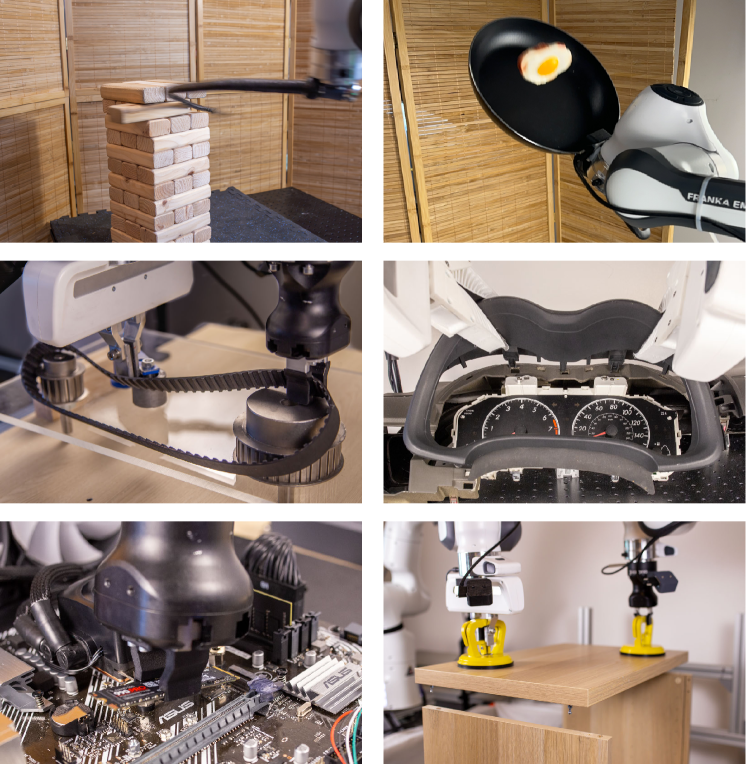
최적화 안정성 문제를 해결하기 위해, 우리는 정책 학습에 사전 훈련된 비전 백본(pretrained visual backbone)을 채택한다. 샘플 복잡도 문제를 해결하기 위해, 인간의 데모와 교정을 통합하는 RLPD Ball et al. [2023] 기반의 샘플 효율적인 오프-정책(off-policy) RL 알고리즘을 활용한다. 또한, 정책 훈련 중 안전을 보장하기 위해 잘 설계된 저수준 제어기(low-level controller)가 포함된다. 훈련 과정에서 시스템은 인간 작업자에게 잠재적 교정을 요청하며, 이 교정 데이터는 오프-정책 방식으로 정책을 업데이트하는 데 사용된다. 우리는 이러한 인간 참여형 교정 절차가 정책이 스스로의 실수로부터 배우고 성능을 향상시키는 데 매우 중요하다는 것을 발견했다. 특히 본 논문에서 다루는, 처음부터 학습하기에는 매우 까다롭고 도전적인 작업들에서 그 효과가 두드러졌다.
그림 1에 나타난 바와 같이, 우리 시스템이 해결하는 작업에는 팬 안의 물체를 동적으로 뒤집기, 젠가 타워에서 블록 빼내기, 양팔 간 물체 전달하기, 그리고 단일 로봇 팔 또는 양팔을 사용하여 컴퓨터 마더보드, 이케아 선반, 차량 대시보드, 타이밍 벨트와 같은 복잡한 장치를 조립하는 작업이 포함된다. 이러한 작업들은 복잡하고 미묘한 동역학, 고차원 상태 및 행동 공간, 긴 수평선(long horizon), 또는 이들의 조합 측면에서 상당한 어려움을 제기한다. 이러한 기술 중 일부는 양팔 조작 작업의 상당수처럼 실제 환경에서 RL로 직접 훈련하는 것이 불가능하다고 여겨졌거나, 타이밍 벨트 조립이나 젠가 빼내기처럼 현재의 로봇 공학 방법으로는 거의 극복하기 어려운 것으로 여겨졌다. 또한 이 작업들은 정밀 조작 작업을 위한 반응형 폐루프(closed-loop) 제어나, 젠가 빼내기처럼 규정하기 매우 어려운 섬세한 개루프(open-loop) 행동 등 서로 다른 유형의 제어 전략을 요구한다. 그러나 가장 놀라운 발견은 우리 시스템이 실제 환경에서 단 1시간에서 2.5시간의 훈련만으로 거의 모든 작업에서 완벽에 가까운 성공률과 인간을 능가하는 사이클 타임을 달성하도록 RL 정책을 훈련할 수 있다는 점이다. 우리가 훈련한 RL 정책은 동일한 양의 인간 데이터(예: 동일한 에피소드 수의 데모 또는 교정)로 훈련된 모방 학습 방법을 크게 능가하여, 성공률 측면에서 평균 101% 향상되었고 사이클 타임은 1.8배 빨라졌다. 이 결과는 이전 방법들로는 불가능하다고 여겨졌던 실제 환경에서 실용적인 훈련 시간 내에 RL이 다양하고 복잡한 비전 기반 조작 정책을 실제로 학습할 수 있음을 보여준다는 점에서 매우 유의미하다. 더욱이, RL은 모방 학습과 수작업으로 설계된 제어기를 크게 능가하는 인간 이상의 성능 수준으로 이를 수행해 낸다.
우리 시스템의 효과를 평가하기 위해, 여러 최첨단 RL 방법과 비교하고 각 구성 요소의 기여도를 이해하기 위한 소거 연구(ablation study)를 수행한다. 결과는 우리 시스템이 관련 베이스라인들을 능가할 뿐만 아니라, 이러한 인상적인 실험적 결과가 실제로 이러한 구성 요소들의 신중한 통합 덕분임을 보여준다. 또한, 실험 결과에 대한 포괄적인 분석을 제공하여 RL 기반 조작의 효과에 대한 통찰을 제시한다. 이 분석은 왜 RL이 완벽에 가까운 성공률을 달성하는지 탐구하고, 나아가 서로 다른 유형의 제어 전략을 획득하기 위한 범용 비전 기반 정책으로서 RL 정책이 가지는 유연성을 조사한다.
요약하자면, 우리의 기여는 적절한 시스템 수준의 설계 선택을 통해 RL이 실제 환경에서 다양하고 정교하며 복잡한 비전 기반 조작 작업을 효과적으로 해결할 수 있음을 보여주는 것이다. 특히, 우리가 아는 한 우리 시스템은 실제 환경에서 RL을 사용하여 이미지 입력으로 양팔 협업을 달성한 최초의 시스템이며, 젠가 블록 빼내기 및 타이밍 벨트 조립과 같은 작업도 최초로 해결했다. 또한 우리는 RL 기반 조작의 실험적 성공에 대한 포괄적인 분석을 제공하여 그 효과에 대한 통찰을 제시한다. 이 분석은 왜 RL이 이러한 복잡한 작업에서 성공하는지에 대한 이해를 형성하고, RL 기반 조작을 훨씬 더 도전적인 시나리오로 확장하기 위한 잠재적 방향을 제시한다.
본 논문에서 제시된 결과를 바탕으로, 본 연구가 향후 학습 기반 로봇 조작 연구의 디딤돌이 되기를 바라며, 장기적으로는 다양한 환경과 작업에 적응할 수 있는 강건하고 배포 가능한 로봇 조작 기술을 가능하게 하여 범용 로봇 조작이라는 목표에 한 걸음 더 다가갈 수 있기를 기대한다.
2 Related Work
제안된 시스템은 RL을 사용하여 정교한 조작 작업을 해결하므로, 실제 환경의 로봇 RL 방법 및 시스템에 관한 관련 연구와 유사한 정교한 조작 작업을 다루는 다른 접근법들을 조사한다.
실제 환경 RL을 위한 알고리즘 및 시스템
실제 환경의 로봇 강화학습(RL)은 온보드 인지(onboard perception)와 같은 고차원 입력을 처리하는 데 샘플 효율적이어야 하며, 보상 및 리셋의 손쉬운 지정을 지원하는 알고리즘을 필요로 한다. 여러 알고리즘이 실제 환경에서 직접 효율적으로 학습할 수 있는 능력을 보여주었다 [Riedmiller et al., 2009, Levine et al., 2016, Luo et al., 2021, Yang et al., 2020, Zhan et al., 2021, Tebbe et al., 2021, Popov et al., 2017, Luo et al., 2019, Zhao et al., 2022, Hu et al., 2024b, Johannink et al., 2019, Hu et al., 2024a, Rajeswaran et al., 2018, Schoettler et al., 2020, Luo et al., 2024a]. 여기에는 오프-정책 RL의 변형 [Kostrikov et al., 2023, Hu et al., 2024b, Luo et al., 2023], 모델 기반 RL [Hester and Stone, 2013, Wu et al., 2022, Nagabandi et al., 2019, Rafailov et al., 2021, Luo et al., 2018], 온-정책 RL [Zhu et al., 2019] 등이 포함된다. 이러한 진전에도 불구하고, 이들은 종종 긴 훈련 시간을 요구한다. 우리 시스템은 더 짧은 훈련 시간으로 복잡한 작업에서 인간을 능가하는 성능을 달성한다. 다른 연구들은 성공 분류기(success classifier) [Fu et al., 2018, Li et al., 2021], 기초 모델 기반 보상(foundation-model-based rewards) [Du et al., 2023, Mahmoudieh et al., 2022, Fan et al., 2022], 비디오 기반 보상 [Ma et al., 2023b, a] 등을 통해 가공되지 않은 시각적 관측으로부터 보상을 추론하는 방법을 연구해 왔다. 또한, 자율 훈련을 가능하게 하기 위해 훈련 중 인간의 개입을 최소화하는 리셋 없는 학습(reset-free learning) [Gupta et al., 2021, Sharma et al., 2021, Zhu et al., 2020, Xie et al., 2022, Sharma et al., 2023] 분야에서 다수의 알고리즘적 발전이 있었다. 우리는 이 분야에서 새로운 알고리즘을 도입하지는 않지만, 우리의 프레임워크는 기존 방법들을 효과적으로 통합한다. 방법론 섹션에서 상세히 설명하듯이, 데모와 함께 이진 분류기 기반 보상을 사용하는 것은 본 논문의 복잡한 작업들에 효과적이다.
우리 연구와 가장 밀접한 관련이 있는 연구 중 하나는 조작 작업을 위한 강화학습(RL) 정책을 훈련하는 시스템을 제시한 SERL [Luo et al., 2024a]이다. 우리의 접근법은 다음과 같은 점에서 SERL과 다르다. SERL은 오직 인간의 데모에만 의존하는 반면, 우리는 RL 정책을 훈련하기 위해 인간의 데모와 교정을 모두 통합한다. 이것이 사소한 차이처럼 보일 수 있지만, 우리의 결과는 교정을 통합하는 것이 정책이 실수로부터 배우고 성능을 향상시키는 데 매우 중요하다는 것을 보여준다. 특히 에이전트가 처음부터 배우기 어려운 작업에서 더욱 그렇다. 또한, SERL은 비교적 수평선이 짧고 단순한 작업에 집중하며 양팔 협업이나 동적 조작은 다루지 않는다. 우리의 독창적인 기여는 본 접근법이 다양한 물리적 특성을 가진 광범위한 작업에 걸쳐 범용 비전 기반 조작 정책을 효과적으로 학습할 수 있음을 보여주는 것이며, 이는 우리 시스템을 기존 SERL 연구와 근본적으로 차별화한다.
정밀하고 정교한 로봇 조작
본 논문에서 고려하는 일부 작업에 대해, 기존 연구들은 대안적인 접근법들을 탐구해 왔다. 삽입 작업에서 기존 연구들은 모델 기반 접근법 [Tang et al., 2016, Jin et al., 2021]과 수동적 순응성(passive compliance)을 갖춘 말단 효과기 툴링 메커니즘 [Morgan* et al., 2021, Su et al., 2022]을 사용해 왔다. 이러한 방법들은 종종 인지(perception)가 없는 상태 기반 모델에 의존하거나 작업별 개발을 필요로 하여, 강인성과 적응성을 제한한다. 또 다른 접근법은 다단계 파이프라인에서 비주얼 서보잉(visual servoing)을 사용하여 로봇 팔을 목표물과 정렬한 다음, 삽입을 위한 탐색 프리미티브를 사용하는 것이다 [Spector et al., 2022, Chang et al., 2024, Song et al., 2015]. 이 방법들 역시 특징점 신뢰성과 정렬 정밀도 측면에서 한계에 직면한다. 반면, 본 연구의 방법은 훨씬 더 긴밀한 인지-행동 루프(perception-action loop)를 채택한다. 이는 폐루프(closed-loop) 방식으로 작업 관련 시각적 특징과 시각운동 정책(visuomotor policy)을 학습하며, 이는 많은 반응형 고정밀 작업에 매우 중요하다. 학습된 정책은 제어 관점에서 출력 피드백 제어(output feedback control)의 일종으로 볼 수 있다 [Astrom and Murray, 2008].
본 논문에서 고려하는 동적 조작 작업 [Mason and Lynch, 1993]을 해결하려는 다수의 연구도 존재한다. Kormushev et al. [2010]은 모션 캡처 시스템과 동적 모션 프리미티브 [Ijspeert et al., 2013]를 활용하여 팬 안의 물체를 뒤집는 방법을 학습했다. 그러나 본 시스템은 픽셀 입력을 직접 사용하므로, 정밀한 모션 캡처 시스템의 필요성을 줄이면서도 현저히 높은 성공률을 달성한다. Fazeli et al. [2019]은 준동적(quasi-dynamic) 방식으로 타워에서 젠가 블록을 밀어내는 학습 방법을 제안했다. 반면, 본 연구의 접근법은 채찍을 사용하여 동적으로 젠가 블록을 제거하며, 이는 훨씬 더 정교한 제어 정책을 요구하는 더 도전적인 작업을 제시한다. 또한 케이블 라우팅 [Luo et al., 2024b, Jin et al., 2019], 트레이싱, 또는 엉킴 풀기 [Viswanath et al., 2023, Shivakumar et al., 2023, Viswanath et al., 2022]와 같은 유연한 물체 조작에 대한 연구들이 있지만, 본 논문의 타이밍 벨트 조립 작업은 텐셔너와 타이밍 벨트 모두를 동적으로 조정하기 위해 두 팔 사이의 반응적이면서도 정밀한 협업을 요구한다. 이 작업은 케이블 조작에 관한 기존 연구들과 근본적으로 다르며 더 도전적이다.
3 인간 참여형 강화학습 시스템
본 섹션에서는 본 논문에서 사용된 방법에 대해 상세히 설명한다. 제시된 방법들을 요약한 애니메이션 동영상은 첨부된 비디오를 참조하기 바란다.
3.1 예비 지식 및 문제 정의
로봇 강화학습 작업은 MDP 를 통해 정의될 수 있으며, 여기서 은 상태 관측(예: 이미지와 로봇의 고유 수용성 감각 상태 정보의 조합), 는 행동(예: 원하는 말단 효과기 트위스트), 은 초기 상태 분포, 는 시스템 역학에 의존하는 알 수 없고 잠재적으로 확률적인 전이 확률이며, 는 작업을 인코딩하는 보상 함수이다. 최적 정책 은 보상의 누적 기댓값, 즉 을 최대화하는 정책이며, 여기서 기댓값은 초기 상태 분포, 전이 확률 및 정책 에 대해 취해진다. 실제로는 정책 를 보통 신경망으로 매개변수화된 가우시안 분포로 모델링한다.
로봇 작업에 강화학습 알고리즘을 구현하려면 적절한 상태 관측 공간 과 행동 공간 을 신중하게 선택해야 한다. 이는 카메라, 고유 수용성 감각 상태, 그리고 이에 대응하는 로봇 저수준 컨트롤러의 올바른 조합을 선택하는 것을 포함한다. 본 연구의 모든 작업에 대해 희소 보상(sparse reward) 함수를 채택한다. 이 함수는 학습된 분류기를 사용하여 작업의 성공 여부를 이진 결정한다. 이러한 설정에서 최적화 목표 는 각 궤적의 성공 확률을 최대화하는 것을 목표로 한다. 이상적으로 수렴 시 정책은 모든 시도에서 성공해야 한다.
3.2 시스템 개요
본 시스템은 그림 2에 나타난 바와 같이 액터 프로세스, 러너 프로세스, 그리고 러너 프로세스 내부에 존재하는 리플레이 버퍼의 세 가지 주요 구성 요소로 이루어져 있으며, 모두 분산 방식으로 작동한다. 액터 프로세스는 로봇에서 현재 정책을 실행하여 환경과 상호작용하고 데이터를 리플레이 버퍼로 다시 보낸다. 환경은 모듈식으로 설계되어 다양한 장치를 유연하게 구성할 수 있다. 여기에는 다중 카메라 지원, 원격 조작을 위한 SpaceMouse와 같은 입력 장치 통합, 그리고 다양한 유형의 컨트롤러를 가진 가변적인 개수의 로봇 팔을 제어하는 기능이 포함된다. 작업의 성공을 평가하기 위해 구현된 보상 함수가 필요하며, 이는 인간의 시연 데이터를 사용하여 오프라인으로 학습된다. 액터 프로세스 내부에서 인간은 SpaceMouse를 사용하여 로봇에 개입할 수 있으며, 이 경우 강화학습 정책으로부터 로봇 제어권을 넘겨받게 된다. 우리는 두 개의 리플레이 버퍼를 사용하는데, 하나는 오프라인 인간 시연 데이터를 저장하는 데모 버퍼(보통 20-30개 범위)이고, 다른 하나는 온폴리시 데이터를 저장하는 RL 버퍼이다.
러너 프로세스는 데모 버퍼와 RL 리플레이 버퍼에서 데이터를 동일하게 샘플링하고, RLPD를 사용하여 정책을 최적화하며, 업데이트된 정책을 주기적으로 액터 프로세스에 전송한다. 본 섹션의 나머지 부분에서는 각 구성 요소에 대해 우리가 내린 디자인 선택의 세부 사항을 제공한다.
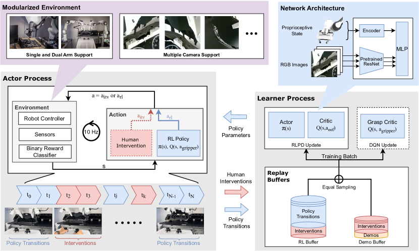
3.3 시스템 디자인 선택
제안된 시스템의 샘플 효율성은 매우 중요한데, 데이터를 획득하기 위한 매 분의 학습마다 비용이 발생하기 때문이다. 따라서 특히 이미지와 같은 고차원 입력을 처리할 때 학습 시간은 실용적인 범위 내에 유지되어야 한다. 또한, 하위 로봇 시스템은 부드럽고 효율적인 학습 과정을 보장하기 위해 강화학습 정책을 수용할 수 있어야 한다. 예를 들어, 실제 저수준 로봇 컨트롤러는 로봇이 환경 내의 물체와 물리적으로 상호작용하는 대부분의 정밀한 접촉이 많은 작업에서 세심한 주의가 필요하다. 이 컨트롤러는 정확해야 할 뿐만 아니라, 강화학습 알고리즘이 학습 중에 무작위 행동으로 탐색할 수 있을 만큼 충분히 안전해야 한다. 따라서 실제 환경에서 샘플 효율적인 정책 학습을 수행할 수 있는 시스템을 개발하기 위해 우리는 다음과 같은 디자인 선택을 내렸다.
사전 학습된 비전 백본
학습 과정의 효율성을 촉진하기 위해, 우리는 이미지 데이터를 처리하는 데 사전 학습된 비전 백본을 활용한다. 이러한 접근법은 현재 컴퓨터 비전 분야에서 강인성과 일반화를 목적으로 하는 일반적인 관행이지만 [Radford et al., 2021, Dosovitskiy et al., 2021, Kolesnikov et al., 2020], 강화학습에서는 최적화 안정성과 탐색 효율성 [Yang and Wang, 2019, Du et al., 2020]과 같은 추가적인 이점을 제공하므로 실제 로봇 강화학습 학습에 특히 유리하다. 그림 2에 나타난 우리의 신경망 아키텍처는 동일한 사전 학습된 비전 백본을 사용하여 카메라로부터 얻은 여러 이미지를 처리한다. 구체적으로, 우리는 ImageNet [Deng et al., 2009]에서 사전 학습된 ResNet-10 모델 [He et al., 2015]을 사용하여 출력 임베딩을 생성한다. 이러한 임베딩들은 이후 연결(concatenate)되고 처리된 고유 수용성 감각 정보와 추가로 통합되어, 더 효율적이고 효과적인 학습 과정을 촉진한다.
보상 함수
강화학습 시스템에서 가장 중요한 요소 중 하나는 학습 과정을 안내하고 정책의 품질을 결정하는 데 사용되는 보상 함수(reward function)이다. 학습 과정을 가속화하기 위해 보상 형성(reward shaping)을 활용하는 기존 연구들 [Ng et al., 1999, Florensa et al., 2018, 2017]이 존재하지만, 이러한 과정은 대개 작업에 국한되며 설계하는 데 많은 시간이 소요된다. 일부 복잡한 작업에서는 이러한 보상 형성을 수행하는 것 자체가 불가능하다. 본 연구에서는 희소 보상 함수(sparse reward function)를 인간의 시연 및 교정과 함께 사용하는 것이 다양한 작업에 대해 직관적이고 효과적인 설정임을 발견했다. 구체적으로, 우리는 오프라인 데이터를 수집하고 각 작업에 대한 이진 분류기(binary classifier)를 학습시키며, 이 분류기는 작업이 완료되었을 때만 양의 보상을 부여하고 그렇지 않으면 0을 부여한다.
하류 로봇 시스템
정책 학습 과정을 수용하기 위해, 우리는 하류(downstream) 로봇 시스템에 몇 가지 특히 중요한 디자인 선택을 적용했다. 공간적 일반화를 용이하게 하기 위해, 우리는 로봇의 고유수용성 감각(proprioceptive) 상태를 상대 좌표계로 표현하여 자기중심적(ego-centric) 정식화가 가능하도록 했다. 기본적으로 각 학습 에피소드가 시작될 때 로봇 말단 작동기(end-effector)의 포즈는 작업 공간 내의 미리 정의된 영역에서 균일하게 무작위화된다. 로봇의 고유수용성 정보는 말단 작동기의 초기 포즈 프레임을 기준으로 표현되며, 정책에서 출력되는 행동은 현재 말단 작동기 프레임에 상대적이다. 이 과정은 말단 작동기에 부착된 프레임에서 상대적으로 바라볼 때 목표물을 물리적으로 이동시키는 것을 모사한다. 결과적으로, 물체가 움직이거나 일부 실험에서처럼 에피소드 중간에 외란이 발생하더라도 정책은 성공할 수 있다. 접촉을 다루는 작업의 경우, 안전을 보장하기 위해 [Luo et al., 2024a]에서와 같이 실시간 레이어에서 기준 제한(reference limiting)이 있는 임피던스 제어기(impedance controller)를 사용한다. 동역학적 작업의 경우, 로봇 팔을 가속하기 위해 말단 작동기 프레임에서 피드포워드 렌치(feedforward wrenches)를 직접 명령한다. 가속도에 대한 폐루프 제어는 수행하지 않지만, 고려된 작업들에 대해 이 단순한 개루프 제어만으로도 충분함을 발견했다. 관측 표현 및 제어기 설계에 대한 자세한 내용은 부록을 참조하기 바란다.
그리퍼 제어
그리퍼 제어가 포함된 작업의 경우, 이산적인 움켜쥐기(grasping) 행동을 평가하기 위해 별도의 크리틱(critic) 네트워크를 채택한다. 이러한 접근 방식은 처음에는 추가적인 오버헤드처럼 보이거나 다소 이례적으로 보일 수 있지만, 실제로는 특히 인간의 시연 및 교정과 결합될 때 매우 효과적인 것으로 입증되었다. 본 연구에서 다루는 작업들에서 그리퍼 행동의 이산적 특성은 연속 분포로 근사하는 것을 더 어렵게 만들며, 특히 본 논문에서 고려된 복잡한 작업에서 더욱 그러하다. 이산 행동을 사용함으로써 학습 과정을 단순화하고 강화학습 시스템의 전반적인 효과를 향상시킨다. 구체적으로, 우리는 이 작업들에서 두 개의 별도 MDP인 및 을 해결하며, 여기서 및 은 각각 연속 및 이산 행동 공간이다. 두 MDP 모두 이미지, 고유수용성 감각, 그리퍼 상태 등 환경으로부터 동일한 상태 관측을 입력받는다. 이산 행동 공간 는 가능한 모든 이산 행동으로 구성된다. 단일 그리퍼의 경우, 이러한 행동은 "열기(open)", "닫기(close)", "유지(stay)"이다. 두 개의 그리퍼가 관여하는 경우, 행동 공간은 각 그리퍼가 취할 수 있는 모든 가능한 행동을 고려하여 가지 조합으로 확장된다. 에 대한 크리틱 업데이트는 다음과 같이 학습을 안정화하기 위한 추가 타겟 네트워크를 포함하는 표준 DQN 방식 [Mnih et al., 2013]을 따른다.
| (3) |
여기서 은 타겟 네트워크이며, 이는 현재 네트워크 매개변수와의 Polyak 평균화 [van Hasselt et al., 2015]를 통해 얻을 수 있다. 학습 또는 추론 시에는 먼저 의 정책으로부터 연속 행동을 쿼리한 다음, 크리틱의 출력에 대해 argmax를 취하여 의 크리틱으로부터 이산 행동을 쿼리한다. 그런 다음 이들을 결합한 행동을 로봇에 적용한다.
3.4 인간 참여형 강화학습
시스템 수준의 디자인 선택이 완료되었으므로, 이제 학습 과정을 가속화하기 위해 사용하는 인간 참여형(human-in-the-loop) 절차를 설명한다. 적절한 탐색 정책을 가정할 때, 최적 정책을 학습하는 샘플 복잡도(sample complexity)가 상태 및 행동 공간의 크기뿐만 아니라 작업의 타임 호라이즌(horizon) [Jin et al., 2018, 2020, Azar et al., 2012, Kearns and Singh, 1998]과 밀접하게 연관되어 있다는 것은 RL 이론 문헌을 통해 잘 확립되어 있다. 이러한 요인들은 종합적으로 실질적으로 해결 가능한 작업 복잡도의 "상한선" 역할을 한다. 구체적으로, 상태/행동 공간의 크기, 작업 호라이즌 또는 이들의 조합이 증가하면 최적 정책을 학습하는 데 필요한 샘플 수가 비례하여 증가하며, 결국 실제 환경에서의 RL 정책 학습이 불가능해지는 임계값을 넘어서게 된다.
실제 로봇 RL 학습에서 이러한 문제를 해결하기 위해, 우리는 정책이 더 효율적으로 탐색할 수 있도록 학습 과정을 안내하는 인간 참여형 피드백을 통합한다. 구체적으로, 그림 2에 나타난 바와 같이 인간 작업자는 학습 중에 로봇을 감독하고 필요할 때 교정 행동을 제공한다.
타임 스텝 부터 까지의 자율 롤아웃 궤적에 대해, 인간은 인 임의의 타임 스텝 에서 개입할 수 있다. 개입하는 동안 인간은 최대 스텝 동안 로봇의 제어권을 갖는다. 그림 2의 빨간색 세그먼트에서 볼 수 있듯이, 단일 궤적 내에서 여러 번의 개입이 발생할 수 있다. 인간이 개입할 때, 정책의 행동 대신 인간의 행동 이 로봇에 적용된다. 우리는 개입 데이터를 시연 버퍼와 RL 데이터 버퍼 모두에 저장한다. 그러나 정책의 전이(즉, 개입 전후의 상태 및 행동)는 RL 버퍼에만 추가한다. 이 접근 방식은 정책 학습 효율성을 높이는 데 효과적인 것으로 입증되었다.
이러한 개입은 정책이 로봇을 복구 불가능하거나 바람직하지 않은 상태로 이끌 때, 또는 인간의 도움 없이는 극복하는 데 상당한 시간이 걸릴 지역 최적점(local optimum)에 빠졌을 때 매우 중요하다. 이 절차는 정책의 성능이 저하될 때 인간이 로봇의 제어권을 넘겨받아 데이터를 수집하는 HG-DAgger [Kelly et al., 2018]와 유사하지만, 우리의 접근 방식은 Luo et al. [2023]과 유사하게 지도 학습이 아닌 강화학습으로 정책을 최적화하는 데 이 데이터를 사용한다. 우리 설정에서 인간 작업자는 SpaceMouse 3D 마우스를 사용하여 로봇에 교정 행동을 제공한다.
학습 초기에는 인간이 교정 행동을 제공하기 위해 더 자주 개입하며, 정책이 개선됨에 따라 개입 빈도를 점차 줄여나간다. 우리의 경험상, 인간 작업자가 특정 교정을 제공하면서 그 외의 경우에는 로봇이 스스로 탐색하도록 둘 때 정책이 더 빠르게 개선되는 것을 확인했다.
3.5 학습 과정
우리 시스템의 학습 과정을 명확히 설명하고 독자들이 우리의 결과를 재현하는 데 도움을 주기 위해, 각 실험에 포함된 단계들을 상세히 안내한다.
먼저, 작업에 가장 적합한 카메라를 선택한다. 손목(wrist) 카메라는 자기중심적 뷰를 제공하기 때문에 학습된 정책의 공간적 일반화를 용이하게 하는 데 특히 유용하다. 그러나 손목 카메라만으로 환경의 전체 뷰를 제공할 수 없는 경우, 여러 대의 측면 카메라도 배치한다. 모든 카메라에 대해 관심 영역에 집중할 수 있도록 이미지 크롭(cropping)을 수행하고, 신경망이 처리할 수 있도록 이미지 크기를 128x128로 조정한다.
다음으로, 보상 분류기를 학습시키기 위한 데이터를 수집한다. 이는 학습 과정을 안내하는 보상 함수를 정의하는 데 있어 매우 중요한 단계이다. 일반적으로 우리는 로봇을 원격 조종하여 작업을 수행함으로써 200개의 양성(positive) 데이터 포인트와 1000개의 음성(negative) 데이터 포인트를 수집한다. 이는 각 궤적이 약 10초 정도 걸린다고 가정할 때 대략 10개의 인간 궤적에 해당한다. 부록 코드에 자세히 설명된 데이터 수집 파이프라인을 사용하면 이러한 데이터 포인트를 수집하는 데 보통 약 5분이 소요된다. 또한, 보상 분류기의 거짓 음성(false negative) 및 거짓 양성(false positive) 문제를 해결하기 위해 추가 데이터를 수집할 수도 있다. 학습된 보상 분류기는 일반적으로 평가 데이터 세트에서 95% 이상의 정확도를 달성한다.
그 후, 작업을 해결하는 인간 시연 궤적을 20-30개 수집하여 오프라인 데모 리플레이 버퍼를 초기화하는 데 사용한다. 각 작업에 대해 로봇 리셋 동작을 스크립트로 작성하거나, USB 집기-삽입 작업과 같이 각 궤적의 시작 부분에서 인간 작업자가 수동으로 작업을 리셋하도록 한다. 마지막으로 정책 학습 과정을 시작한다. 이 단계 동안 정책이 수렴할 때까지 필요한 경우 정책에 인간의 개입이 제공될 수 있다. 또한 작업 성공으로 이어지는 길고 희소한 개입을 지속적으로 제공하는 것은 피해야 한다는 점에 유의해야 한다. 이러한 개입 전략은 특히 학습 초기 단계에서 가치 함수(value function)의 과대평가를 유발하여 학습 역학을 불안정하게 만들 수 있다.
4 실험 결과
본 섹션에서는 실험에 대해 논의한다. 먼저 실험 설정과 결과를 제시한다. 그 다음 이러한 결과와 그것이 시사하는 바에 대해 논의한다.
4.1 실험 개요
우리는 그림 3에 나타난 바와 같이 다양한 특성을 포괄하는 7가지의 다채로운 작업에 대해 실험을 수행한다. 이러한 작업들은 동적 물체 조작(예: 팬 안의 물체 뒤집기), 정밀하고 섬세한 조작(예: SSD를 일치하는 슬롯에 삽입하기), 동적 및 정밀 조작의 결합(예: 목표물이 움직이는 동안 부품 삽입하기), 유연한 물체 조작(예: 타이밍 벨트 조립하기), 그리고 여러 하위 작업을 포함하는 다단계 작업(예: 이케아 선반 조립하기)을 비롯한 다양한 조작의 난제들을 포함한다. 우리는 단일 로봇 팔 또는 양팔 설정을 사용하고, 관측과 행동의 다양한 조합을 결합하여 이러한 작업들을 해결한다.
관측 공간은 손목 장착형 및 측면 카메라의 이미지, 말단 장치(end-effector)의 포즈, 트위스트(twist), 힘/토크, 그리고 양팔의 현재 그리퍼 상태를 포함할 수 있다. 동적 작업의 경우, 행동 공간은 말단 장치 좌표계에서의 피드포워드 렌치(feedforward wrench)를 직접 명령하며, 이는 대략 원하는 가속도로 생각할 수 있다.
다른 작업의 경우, 행동 공간은 하류(downstream) 임피던스 제어기를 위한 각 로봇 팔의 6D 데카르트 트위스트(Cartesian twist) 목표값과 하나 또는 두 개의 그리퍼를 제어하기 위한 이산적 행동을 포함할 수 있다.
별도의 언급이 없는 한, 모든 작업에 대해 우리는 보상 검출기로서 이진 분류기를 학습시켰으며, 이는 손목 및/또는 측면 카메라의 이미지를 입력으로 받아 현재 상태가 현재 작업을 성공적으로 완료했는지 여부를 예측한다. 이러한 분류기를 학습시키기 위해 우리는 인간 작업자로부터 긍정적 및 부정적 데모를 모두 수집하며, 필요한 경우 잠재적인 거짓 긍정(false positive) 또는 거짓 부정(false negative) 사례를 추가로 수집한다. 각 작업에 대한 학습 과정의 세부 사항은 부록에 포함되어 있다. 움켜쥐기(grasping)를 포함하는 작업의 경우, 정책이 불필요하게 그리퍼를 작동하는 것을 방지하기 위해 그리퍼 행동에 대한 작은 음의 패널티도 포함한다. 또한 각 작업은 작업의 초기 상태를 무작위화하기 위해 스크립트화된 로봇 모션 또는 수동 인간 리셋을 사용한다. 각 작업의 설정 및 정책 학습에 대한 세부 사항은 부록에서 확인할 수 있다. 본 섹션의 나머지 부분에서는 먼저 각 작업을 상세히 설명하고, 관련 결과 및 다른 최첨단(SOTA) 방법들과의 비교를 제시할 것이다.
4.2 작업 설명
본 서브섹션에서는 실험에 사용된 작업들에 대한 설명을 제시한다. 우리는 접촉이 많은 동역학(contact-rich dynamics), 양팔 협조(dual-arm coordination), 유연한 물체 다루기, 동적 조작을 포함하여 광범위한 조작 난제를 다룰 수 있도록 작업을 선정했다. 여기서는 유사한 난제를 가진 작업들이 함께 제시되도록 구성했다. 먼저 접촉이 많은 환경에서 정밀한 조작을 요구하는 두 가지 작업을 제시하고, 이어서 유연한 물체 조작을 포함하여 어려운 작업을 해결하기 위해 양팔 협조가 필요한 세 가지 작업을 제시한다. 그 다음 동적 조작이 필요한 두 가지 작업으로 넘어간다. 각 작업에 대한 그림은 그림 3에서 확인할 수 있다.
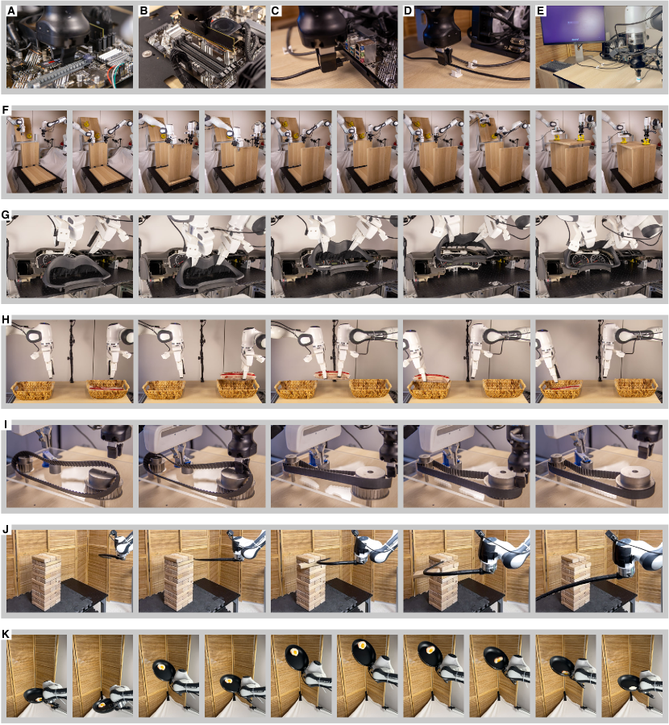
메인보드 조립
메인보드 조립 작업은 네 가지 하위 작업을 포함한다: RAM 카드를 일치하는 슬롯에 삽입하기, PCI-E SSD를 메인보드에 조립하기, 자유롭게 놓여 있는 USB 케이블을 집어 올려 슬롯에 삽입하기, 그리고 USB 케이블을 꽉 끼는 클립에 고정하기.
RAM 삽입
이 작업에서 로봇은 RAM 카드를 일치하는 슬롯에 삽입해야 한다. 이 과정은 두 가지 주요 단계를 포함한다: 먼저 RAM 카드를 슬롯 양쪽의 좁은 개구부에 정렬해야 하며, 그 다음 적절한 힘으로 섬세한 하향 운동을 진행하여 RAM 카드를 슬롯에 삽입해야 한다. RAM 카드가 잠금 장치를 작동시키지 않고 슬롯에 완전히 삽입되어 쉽게 리셋할 수 있는 상태가 되면 작업이 성공한 것으로 간주된다. 원하는 경우, 학습된 정책을 실행한 후 추가적인 하향 힘을 가해 RAM 카드를 제자리에 잠글 수 있다. 이 작업은 약간의 과도한 힘을 가하면 RAM 카드가 그리퍼 내에서 기울어져 실패로 이어질 수 있는 반면, 힘이 부족하면 RAM 카드가 슬롯에 제대로 삽입되지 않을 수 있기 때문에 까다롭다. RAM 카드는 로봇이 미리 잡고 있는 것으로 가정하지만, 움켜쥐기(grasping)의 다양성을 도입하기 위해 주기적으로 고정 장치에 다시 올려놓고 다시 잡도록 한다.
SSD 조립
이 작업에서 로봇은 SSD의 한쪽 끝을 일치하는 슬롯에 삽입한 다음, 다른 쪽 끝을 메인보드에 있는 고정 장치 위에 놓아야 한다. SSD의 양쪽 끝이 각각의 상대 부품에 제대로 맞물리면 작업이 성공한 것으로 간주된다. 이 작업은 접촉 핀의 손상을 방지하기 위해 처음에 부드러우면서도 정밀한 삽입 전략이 필요하며, 이어서 다른 쪽 끝을 지지 고정 장치에 정렬하기 위한 또 다른 정밀한 움직임이 필요하다. SSD는 로봇이 미리 잡고 있는 것으로 가정하지만, 움켜쥐기의 다양성을 도입하기 위해 주기적으로 고정 장치에 다시 올려놓고 다시 잡도록 한다.
USB 커넥터 움켜쥐기 및 삽입
이 작업에서는 USB 케이블이 테이블 위에 자유롭게 놓여 있으며, 로봇은 USB 커넥터 부분을 잡고 해당 슬롯에 삽입한 후 그리퍼를 놓아야 한다. USB 커넥터가 슬롯에 완전히 삽입되고 그리퍼가 풀리면 이 작업은 성공한 것으로 간주된다. 어려운 점은 USB 케이블의 초기 배치 위치의 가변성과 움켜쥐는 포즈의 불확실성에 있으며, 정책은 삽입 과정에서 이러한 불확실성을 고려하는 법을 배워야 한다. 예를 들어, 부적절한 움켜쥐기가 실행된 경우, 정책은 더 나은 움켜쥐기 포즈를 얻기 위해 물체를 놓고 다시 잡아야 할 수도 있다.
USB 케이블 클리핑 (USB Cable Clipping)
이 작업은 USB 케이블이 마더보드에 이미 연결되어 있다고 가정하며, 로봇은 케이블의 남은 부분을 집어 올려 딱 맞는 정리용 클립에 삽입하는 임무를 맡는다. USB 케이블이 클립에 완전히 삽입되면 작업이 성공한 것으로 간주된다. 어려운 점은 변형 가능한 USB 케이블의 가변성과 빽빽한 삽입 단계에 있다.
전체 조립 (The Whole Assembly)
우리는 또한 하위 작업 간의 전환을 위해 스크립트 동작을 사용하여 위의 네 가지 하위 작업을 연결함으로써 전체 조립 작업을 수행했다. 전체 조립 과정의 비디오 클립은 프로젝트 웹사이트와 보충 자료에서 확인할 수 있다. 비디오는 전체 조립 정책을 실행한 후 컴퓨터가 성공적으로 부팅됨을 보여주며, 이는 작업 성공을 달성할 뿐만 아니라 이러한 섬세한 부품을 손상시키지 않고 RL 훈련 과정을 우아하게 수행하는 데 있어 우리 방법의 효과를 입증한다.
IKEA 조립 (IKEA Assembly)
IKEA 조립 작업은 4개의 보드로 IKEA 선반을 조립하는 작업을 포함하며, 세 가지 하위 작업으로 분해된다. 로봇은 먼저 두 개의 측면 패널을 테이블에 고정된 패널에 조립한 다음, 조립된 측면 패널에 상단 패널을 장착해야 한다. 모든 부품이 선반에 올바르게 조립되면 작업이 성공한 것으로 간주된다. 모든 하위 작업에 대해 패널이 로봇에 의해 사전 파지(pre-grasp)되었다고 가정하지만, 파지 가변성을 도입하기 위해 주기적으로 패널을 고정구에 다시 놓고 다시 파지한다.
측면 패널 조립 (Side Panel Assembly)
이 작업에서는 측면 패널의 상단 부분을 로봇이 사전 파지한 것으로 가정하지만, 대화형 조립 과정 중 패널의 무거운 무게로 인해 파지 위치가 달라질 수 있으며, 우리는 주기적으로 고정구에서 패널을 다시 파지한다. 하단 부분이 두 개의 일치하는 핀에 올바르게 조립되면 작업이 성공한 것으로 간주된다.
상단 패널 조립 (Top Panel Assembly)
두 개의 측면 패널이 조립된 후, 이 작업은 로봇이 상단 패널을 양쪽 측면 패널에 장착할 것을 요구한다. 상단 패널의 핀 4개가 측면 패널의 해당 구멍에 올바르게 삽입되면 작업이 성공한 것으로 간주된다. 이 작업은 조립 과정에서 측면 패널의 상단 부분이 움직일 수 있기 때문에 어려우며, 정책은 성공하기 위해 이러한 변화에 적응해야 한다.
전체 조립 (The Whole Assembly)
우리는 또한 그림 3과 보충 자료에 설명된 대로, 하위 작업 간의 전환을 위해 스크립트 동작을 사용하여 훈련된 세 가지 정책을 연결함으로써 전체 조립 작업을 수행했다. 각 하위 작업에 대해, 정책에 가변성을 도입하기 위해 스크립트 파지 포즈를 각 병진 차원에서 1cm씩 균일하게 무작위화했다. 모든 패널이 성공적으로 조립되면 이 작업은 성공한 것으로 간주되며, 각 하위 정책은 최대 2회의 시도가 허용된다. 이 작업은 매우 긴 호라이즌(long-horizon) 작업이므로 연결된 정책에 대해 10회 실험을 수행한다.
자동차 대시보드 조립 (Car Dashboard Assembly)
그림 3에 설명된 바와 같이, 자동차 대시보드 조립 작업은 두 단계로 구성된다. 양팔이 먼저 작업물의 적절한 위치를 파지한 다음 들어 올려 대시보드에 조립해야 한다. 작업물의 모든 핀이 대시보드의 해당 구멍에 완전히 삽입되면 작업이 성공한 것으로 간주된다. 이 작업은 정밀한 조작뿐만 아니라 양손 협동(bimanual coordination)을 요구한다. 두 팔은 작업물을 들어 올리고, 회전시키며, 동시에 여러 핀을 정렬하기 위해 동작 및 그리퍼 폐쇄 타이밍을 조정해야 한다.
물체 인도 (Object Handover)
이 작업에서는 두 로봇 팔이 한 바구니에서 다른 바구니로 물체를 전달하는 과정을 조정해야 한다. 오른팔이 먼저 오른쪽 바구니에서 물체를 집어 올린다. 그런 다음 물체를 왼팔로 인도하고, 왼팔은 이를 왼쪽 바구니에 정밀하게 놓는다. 물체가 오른쪽 바구니에 평평하게 놓이면 작업이 성공한 것으로 간주된다. 인도 부분은 물체가 떨어지는 것을 방지하기 위해 로봇 그리퍼가 동작 타이밍을 조정해야 하므로 까다롭다.
타이밍 벨트 조립 (Timing Belt Assembly)
이 작업에서는 두 로봇 팔이 협동하여 타이밍 벨트를 풀리에 조립하고 텐셔너를 작동시킨다. 이 작업은 NIST 보드 조립 챌린지 [Kimble et al., 2020]의 일부이다. 이 과정은 무작위로 배치된 벨트를 찾아 조작하고, 벨트를 두 풀리에 끼우기 위해 정밀한 동작을 조정하며, 동시에 벨트를 수용하기 위해 텐셔너를 작동시키는 과정을 포함한다. 벨트가 두 풀리에 올바르게 끼워지고 텐셔너가 단단히 조여지면 성공이다.
이 작업은 몇 가지 과제를 제시한다. 벨트는 조립 과정에서 예측 불가능하게 변형될 수 있으므로 적응형 조작이 필요하다. 양팔은 벨트를 효과적으로 끼우기 위해 신중하게 타이밍이 맞춰진 움직임으로 정밀하게 협동해야 한다. 텐셔너 조정 타이밍은 매우 중요한데, 텐셔너가 벨트가 끼워지도록 허용하면서도 걸림을 방지해야 하기 때문이다. 과정 전반에 걸쳐 정책은 유연한 벨트의 변화하는 상태와 전체 시스템 구성에 지속적으로 적응해야 한다.
이 작업의 복잡성은 변형 가능한 물체를 다루는 동시에 양손 동작을 정밀하게 조정하고 텐셔너 메커니즘을 관리해야 하는 필요성에서 비롯된다. 이를 위해 정책은 일관되게 성공할 수 있도록 정교하고 반응적인 행동을 개발해야 한다.
젠가 채찍질 (Jenga Whipping)
이 작업에서 로봇은 젠가 탑을 쓰러뜨리지 않고 탑에서 특정 블록을 채찍질하듯 빠르게 빼내야 한다. 이 작업의 성격은 이전 작업들과 크게 다른데, 이전 작업들에서 요구되었던 반응형 폐루프(closed-loop) 제어와 달리 고도로 동적인 개루프(open-loop) 행동을 학습해야 하기 때문이다. 이 작업의 역학은 다루기 힘들 정도로 복잡하다. 변형 가능한 채찍이 매우 빠른 속도로 이동하며 주변 압축 공기와 상호작용하므로 그 움직임을 예측하기 어렵다. 또한, 전체 탑을 불안정하게 만들지 않고 특정 블록을 제거하는 데 필요한 정확한 힘을 결정하는 것은 복잡한 접촉 역학으로 인해 추가적인 복잡성을 야기한다. 정책이 자체 행동의 결과, 직관적 물리, 그리고 채찍과 블록 간의 상호작용을 관찰함으로써 반사 신경과 같은 행동을 발달시키는 것이 필수적이다. 이를 통해 로봇은 탑이 무너지지 않도록 정밀하고 일관된 동작을 수행하여 대상 블록을 성공적으로 제거할 수 있다. 이 특정 작업의 경우, 실시간 인간 교정을 사용하는 대신 30개의 전문가 시연으로 오프라인 데이터셋을 초기화했다는 점에 유의해야 한다. 이는 작업의 독특한 특성을 고려할 때 훈련 중 인간의 피드백을 통합하는 것이 비실용적이고 부적절하기 때문에 의도적으로 선택된 것이다.
물체 뒤집기 (Object Flipping)
이 작업에서는 로봇의 말단 효과기(end-effector)에 부착된 팬 위에 물체를 무작위로 배치하고, 로봇이 수평축을 기준으로 물체를 뒤집는 작업을 수행한다. 물체가 반대편으로 뒤집히고 팬 위에 남아 있으면 작업이 성공한 것으로 간주된다. 물체의 초기 배치가 무작위이기 때문에, 정책은 이러한 변화에 적응하는 방법을 학습해야 한다. 예를 들어 뒤집기 동작을 실행하기 전에 물체를 더 유리한 위치로 이동시키는 것 등이다. 이 작업의 성격은 젠가 작업과 유사하여 정밀하고 정교한 개루프 행동을 요구한다. 그러나 정책이 처음에 물체의 위치를 재조정해야 할 수도 있으므로 폐루프 요소도 포함된다.
4.3 실험 결과
| Training Time (h) | Success Rate (%) | Cycle Time (s) | |||
| Task | BC | HIL-SERL (ours) | BC | HIL-SERL (ours) | |
| RAM Insertion | 1.5 | 29 | 100 (+245%) | 8.3 | 4.8 (1.7x faster) |
| SSD Assembly | 1 | 79 | 100 (+27%) | 6.7 | 3.3 (2x faster) |
| USB Grasp-Insertion | 2.5 | 26 | 100 (+285%) | 13.4 | 6.7 (2x faster) |
| Cable Clipping | 1.25 | 95 | 100 (+5%) | 7.2 | 4.2 (1.7x faster) |
| IKEA - Side Panel 1 | 2 | 77 | 100 (+30%) | 6.5 | 2.7 (2.4x faster) |
| IKEA - Side Panel 2 | 1.75 | 79 | 100 (+27%) | 5.0 | 2.4 (2.1x faster) |
| IKEA - Top Panel | 1 | 35 | 100 (+186%) | 8.9 | 2.4 (3.7x faster) |
| IKEA - Whole Assembly | – | 1/10 | 10/10 (+900%) | – | – |
| Car Dashboard Assembly | 2 | 41 | 100 (+144%) | 20.3 | 8.8 (2.3x faster) |
| Object Handover | 2.5 | 79 | 100 (+27%) | 16.1 | 13.6 (1.2x faster) |
| Timing Belt Assembly | 6 | 2 | 100 (+4900%) | 9.1 | 7.2 (1.3x faster) |
| Jenga Whipping | 1.25 | 8 | 100 (+1150%) | – | – |
| Object Flipping | 1 | 46 | 100 (+117%) | 3.9 | 3.8 (1.03x faster) |
| Average | – | 49.7 | 100 (+101%) | 9.6 | 5.4 (1.8x faster) |
| Task | DP | HG-DAgger | BC | IBRL | Residual RL | DAPG | HIL-SERL (ours) | ||
| RAM Insertion | 27 | 29 | 12 | 75 | 0 | 8 | 0 | 48 | 100 |
| Dashboard Assembly | 18 | 41 | 35 | 0 | 0 | 18 | 0 | 0 | 100 |
| Object Flipping | 56 | 46 | 46 | 95 | 97 | 72 | 0 | 100 | 100 |
| Average | 34 | 39 | 31 | 57 | 32 | 33 | 0 | 49 | 100 |
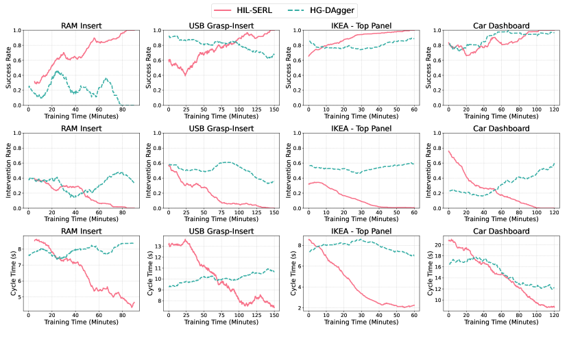
본 서브섹션에서는 위에 언급된 모든 작업에 대한 실험 결과를 제시한다. 각 작업에 대해 성공률, 사이클 타임, 훈련 시간을 보고한다. 훈련 시간에는 모든 스크립트 동작, 정책 롤아웃, 의도된 정지뿐만 아니라 단일 NVIDIA RTX 4090 GPU에서 수행되는 온보드 연산이 포함된다. 별도로 명시되지 않는 한, 모든 결과는 100회의 평가 시도를 기반으로 한다. 이러한 평가 동안, 스크립트된 로봇 동작 또는 인간의 리셋을 사용하여 초기 상태를 무작위화한다. 평가 프로토콜은 부록에서 확인할 수 있다.
본 논문의 핵심 주장은 HIL-SERL이 인간 원격 조작에 기반한 모방 학습 방법보다 우수한 성능을 보인다는 점이다. 이를 입증하기 위해서는 동등한 설정 하에서 관련 모방 학습 방법들을 공정하게 비교하는 것이 중요하다. 나이브한 모방 학습 접근 방식은 [Ross et al., 2011]이 지적한 바와 같이 종종 오류 누적 문제로 어려움을 겪는다. DAgger 및 그 변형들[Ross et al., 2011, Kelly et al., 2018]은 지도 학습을 통해 정책을 정제하기 위해 인간의 교정을 통합함으로써 이 문제를 해결한다. 본 연구의 방법 역시 인간의 교정을 활용하지만, 이를 지도 학습 대신 작업별 보상에 기반한 강화 학습을 통해 정책을 최적화하는 데 사용한다. 따라서, 강화 학습에 사용된 것과 동일한 양의 인간 시연 및 교정을 사용하여 HG-DAgger [Kelly et al., 2018] 베이스라인을 훈련함으로써 본 접근 방식을 모방 학습과 비교한다. 먼저 본 연구의 방법에 제공된 것과 동일한 양의 오프라인 인간 시연을 사용하여 행동 복제(BC)로 기본 정책을 사전 훈련한다. 그런 다음 이 정책을 실행하고 인간 전문가의 교정을 수집하여, 총 시도 횟수와 개입 횟수가 RL 훈련과 일치하도록 한다. 구체적으로, 본 연구의 방법과 동일한 횟수의 에피소드 동안 실행하고 에피소드당 유사한 횟수의 개입을 제공하는 것을 목표로 한다.
이 비교는 개입이 어렵고 바람직하지 않은 젠가 채찍질 및 물체 뒤집기를 제외한 모든 작업에 대해 수행된다. 이러한 작업의 경우, 대신 50회 및 200회의 오프라인 시연을 수집하고 BC 정책을 베이스라인으로 훈련한다. 이는 일반적으로 20-30회의 시연만 필요로 하는 본 연구의 방법보다 훨씬 더 많은 수의 시연을 제공하는 것이다.
모든 실험에서 우리는 서로 다른 방법들을 비교하기 위한 주요 지표로 성공률과 사이클 타임을 사용한다. 본 접근 방식의 효과를 추가로 검증하기 위해 시간이 지남에 따른 개입률도 보고하며, 이를 통해 정책이 점진적으로 개선되어 개입의 필요성이 줄어듦을 보여준다. 이상적으로는 개입률이 0에 수렴하여 정책이 자율적으로 수행됨을 나타낸다. 실험 결과는 그림 4과 표 1(a)에서 확인할 수 있다.
먼저 표 1에 나타난 바와 같이, HIL-SERL은 거의 모든 작업에서 실제 환경 훈련 1~2.5시간 만에 100%의 성공률을 달성했다. 이는 모든 작업에서 평균 49.7%의 성공률을 달성한 HG-DAgger 베이스라인에 비해 크게 향상된 결과이다. 이러한 성능 차이는 젠가 채찍질, RAM 메모리 삽입, 타이밍 벨트 조립과 같이 더 복잡한 행동을 요구하는 작업에서 더욱 두드러진다.
또한 그림 4에서 거의 모든 작업에 대해 시간이 지남에 따른 인간 개입 횟수를 보고한다. 구체적으로, 에피소드 내 전체 타임스텝 대비 개입된 타임스텝의 비율을 계산하여 개입률을 구하고, 20개 에피소드에 대한 이동 평균을 보고한다. 그림에 나타난 바와 같이, 훈련이 진행됨에 따라 개입률이 감소하며, 이는 정책이 개선되고 인간의 교정에 덜 의존하게 됨을 나타낸다. 추가로, 개입의 총 지속 시간이 극적으로 감소함을 관찰할 수 있다. 초기에는 정책이 미숙할 때 길고 드문 개입을 수행한다. 정책이 개선됨에 따라 더 적은 오류를 수정하기 위해 더 짧은 개입으로도 충분해진다. 반면, HG-DAgger 정책은 정책을 수정하기 위해 더 빈번한 개입을 필요로 하며, 개입의 총 지속 시간이 시간이 지남에 따라 반드시 감소하지는 않는다. 따라서 본 연구의 방법은 더 적은 인간의 감독으로 더 나은 성능을 달성한다.
본 연구의 방법이 HG-DAgger보다 우수한 성능을 보이는 것은 RL의 핵심적인 장점 덕분이다. RL은 더 넓은 범위의 상태를 탐색하고 작업별 보상을 직접 최적화하는 반면, 인간의 교정에 의존하는 DAgger는 불일치를 유발하고 상태 탐색을 제한할 수 있다. RL은 자체 상태 분포로부터 학습하고 오류를 자율적으로 수정하므로 인간 시연의 제약을 극복하여 더 강인한 정책을 생성한다. 이러한 실증적 결과는 강화 학습(RL) 정책이 원칙적으로 DAgger보다 우수한 성능을 보일 수 있음을 증명한 [Luo et al., 2023]의 이론적 결과와 일치한다. 성능 격차는 인간 교정의 하위 최적성(suboptimality)이 증가할수록 넓어지는 경향이 있으며, 이는 작업이 복잡해질수록 발생할 가능성이 더 높다.
고려해야 할 또 다른 중요한 측면은 사이클 타임, 즉 작업을 완료하는 데 걸리는 시간이다. 평균적으로 HG-DAgger 정책은 9.6초의 평균 사이클 타임을 달성한 반면, 본 연구의 방법은 5.4초의 평균 사이클 타임을 달성했다. 이는 1.8배 더 빠른 성능 향상을 나타낸다. 모방 학습 방법은 인간 시연의 하위 최적성을 처리할 메커니즘이 부족하기 때문에 이러한 성능 향상은 예상된 결과이다. 반면, 강화 학습(RL)은 동적 계획법(dynamic programming)을 활용하여 할인된 보상 합계(discounted sum of rewards)를 최적화할 수 있다. 할인 인자 에 대해, 이 접근 방식은 정책이 보상을 더 빨리 획득하도록 장려하여 인간 시연을 모방하여 달성한 것보다 더 짧은 사이클 타임을 결과로 가져온다.
이러한 실험들을 통해, 본 연구의 방법이 매우 다른 물리적 특성을 가진 작업 전반에 걸쳐 범용적이고 효과적임을 입증하였으며, 각 작업의 특정 요구 사항에 적합한 개루프 및 폐루프 정책을 모두 잘 생성해냄을 확인했다. 타이밍 벨트 조립이나 RAM 메모리 삽입과 같은 정밀 조작 작업의 경우, 정책은 작업 관련 시각적 특징을 적절한 비틀기(twist) 동작과 연관시키는 법을 학습한다. 이는 실시간으로 스트리밍되는 관측에 반응하고 목표에 도달할 때까지 동작을 조정하는 연속적인 비주얼 서보잉(visual servoing) 행동을 수행한다. 반면, 젠가 채찍질 및 물체 뒤집기와 같은 작업의 경우, 정책은 상호작용을 통해 자신의 행동이 초래할 잠재적 결과를 예측하는 법을 학습한다.
그 후, 실행의 일관성을 유지하면서 원하는 결과를 달성하기 위해 동작을 정밀하게 미세 조정한다. 또한 학습된 행동에 대한 심층적인 분석을 제공하며, 이는 후속 섹션에서 다룬다.
전반적으로, 우리의 실험은 제안하는 방법이 범용적이면서도 효과적임을 보여준다. 동일한 접근 방식을 사용하여 다양하고 도전적인 조작 작업에 대한 정책을 성공적으로 학습하며, 모든 작업에서 높은 성능을 달성한다. 또한 양손 조작(bimanual manipulation)에 요구되는 것과 같은 고차원 관측 및 행동 공간에서도 실용적인 훈련 시간 내에 이러한 성능을 달성한다.
4.4 강인성 결과
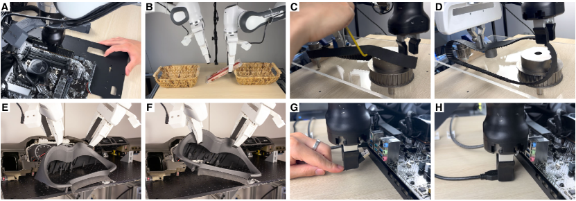
제안하는 방법으로 학습된 정책의 제로샷 강인성(zero-shot robustness)을 테스트하기 위해, 그림 5에 정성적 결과 세트를 제공한다. 이러한 결과는 정책이 실시간 변화에 동적으로 적응하고, 사람이 그리퍼에서 의도적으로 물체를 떨어뜨리거나 작업 실행 중 사람이 의도적으로 그리퍼를 강제로 여는 등의 외부 방해를 처리하는 능력을 보여준다. 관련 비디오 클립은 보충 자료 및 웹사이트 https://hil-serl.github.io/에서 확인할 수 있다.
타이밍 벨트 조립 작업에서 벨트는 임의의 변형을 겪을 수 있으며, 정책은 조립 과정에서 이러한 변화에 적응해야 한다. 또한 정책의 강인성을 추가로 테스트하기 위해 벨트에 외부 방해를 도입한다. 이러한 방해에는 그림 5 (C) 및 (D)와 같이 조립 과정에서 벨트의 형상을 인위적으로 섭동시키거나 동적으로 위치를 변경하는 것이 포함된다. RAM 삽입 작업에서는 그림 5 (A)에 나타난 바와 같이, 고유수용성 감각 관측(proprioceptive observation)의 자기중심적 표현(ego-centric representation) 덕분에 삽입 과정 중 대상이 움직이는 경우에도 학습된 정책이 RAM 스틱을 성공적으로 삽입한다. 차량 대시보드 조립 및 물체 전달 작업의 경우, 정책이 물체를 파지한 후 작업 실행 중에 그리퍼를 강제로 열었다. 정책은 그림 5 (B), (E), (F)에 제시된 바와 같이 물체를 다시 파지하려고 시도하고 나머지 작업을 진행함으로써 이 예기치 않은 상황에 반응한다. USB 커넥터 파지-삽입 작업에서는 USB 커넥터의 초기 포즈를 다양하게 하고 가끔 그리퍼 밖으로 강제로 밀어내어 불량한 파지 포즈를 모사했다. 정책은 그림 5 (G) 및 (H)에서 볼 수 있듯이 커넥터를 놓고 다시 파지하여 삽입에 더 나은 포즈를 취함으로써 적응했다. 이러한 강인한 행동은 RL 훈련 단계 동안의 자율적 탐색을 통해 달성된다. 예를 들어, 정책은 파지 포즈를 후속 삽입 작업과 연관시키는 법을 배우고 필요한 경우 물체를 재파지한다. 그러나 이러한 강인한 행동은 모방 학습(imitation learning) 방법으로는 달성하기 어려운데, 이는 모방 학습에 자율적으로 탐색하고 행동의 결과로부터 학습하는 메커니즘이 결여되어 있기 때문이다.
4.5 추가 베이스라인 비교
제안하는 방법의 설계 선택의 효과성을 검증하기 위해, 세 가지 대표적인 작업인 차량 대시보드 패널 조립(양손 협조), RAM 삽입(정밀 조작), 물체 뒤집기(동적 조작)에 대해 추가 비교를 수행했다. 우리는 제안하는 접근 방식의 성능의 다양한 측면을 강조하기 위해 여러 최첨단 방법들과 비교한다. 인간 개입의 중요성을 설명하기 위해 인간 데모 및 교정의 수를 변경하며 소제 분석(ablation study)을 수행했다. 제안하는 방법이 인간 데모를 얼마나 효과적으로 통합하고 활용하는지 보여주기 위해 Residual RL [Johannink et al., 2019], DAPG [Rajeswaran et al., 2018], IBRL [Hu et al., 2024a]과 비교했다. 또한, 작업의 난이도가 단순히 인간 데모의 다중 모드성(multi-modality)에서 기인하는 것이 아님을 보장하기 위해 Diffusion Policy [Chi et al., 2024]와도 비교한다. 이러한 종합적인 비교는 다양한 조작 시나리오에서 제안하는 방법의 효과성과 능력을 검증하는 역할을 하며, 결과는 표 1에 제시되어 있다.
먼저, 데모나 교정이 없는 처음부터의 RL(RL from scratch)은 모든 작업에서 0%의 성공률을 기록했음을 밝힌다. 온라인 인간 교정의 중요성을 검증하기 위해, SERL의 오프라인 버퍼에 있는 데모 수를 평소의 20개에서 200개로 10배 늘렸다. 그러나 온라인 교정이 없으면 이 접근 방식은 HIL-SERL에 비해 성공률이 현저히 낮았으며, 차량 대시보드 조립과 같은 복잡한 작업에서는 완전히 실패(성공률 0%)했다. 이는 정책 학습을 촉진하는 데 있어 온라인 교정의 결정적인 역할을 확인시켜 준다. 이러한 결과는 특히 지속적인 반응적 행동을 요구하는 복잡한 조작 작업에서 정책 학습을 안내하는 데 있어 오프라인 데모와 온정책(on-policy) 인간 개입 모두의 결정적인 역할을 확인해 준다.
물체 뒤집기 작업의 경우, 20개 및 200개의 데모를 모두 사용하여 BC 정책을 훈련했다. 이 두 BC 정책의 결과는 데모 수가 10배 증가했음에도 불구하고 각각 47%와 46%의 성공률로 매우 유사했다. 이는 이 작업이 주로 개루프(open-loop) 방식임에도 불구하고 단순히 인간 데모를 모방하는 것만으로는 이 작업을 해결하기에 불충분함을 나타낸다.
고려해야 할 또 다른 중요한 측면은 제안하는 방법이 다른 방법들과 비교하여 데모를 어떻게 처리하는가이다. 언급된 베이스라인들과 비교하기 위해 각 작업에 대해 200개의 데모를 수집했다. 이 수는 제안하는 방법의 오프라인 재생 버퍼(offline replay buffer)에 대략 20-30개 정도 있는 오프라인 데모 수보다 실질적으로 훨씬 많다는 점에 유의해야 한다. Residual RL 및 IBRL의 경우, 알고리즘 파이프라인에 입력하기 위해 이 데모들로 행동 복제(BC) 정책을 훈련했다. DAPG의 경우, 이 200개의 데모를 별도의 버퍼에 저장하고 정책 행동이 데모를 따르도록 규제(regularization)했다. 전반적으로, 표 1에 나타난 바와 같이 제안하는 방법은 이러한 베이스라인들을 일관되게 큰 차이로 능가했다.
이는 다음과 같이 해석할 수 있다. Residual RL은 학습 과정을 촉진하기 위해 사전 훈련된 BC 기본 정책에 의존한다. 그러나 이 접근 방식은 차량 대시보드 조립이나 RAM 삽입과 같이 정밀한 조작이 필요한 작업에서는 문제가 될 수 있다. 이러한 시나리오에서는 BC를 포함한 모방 학습 방법이 부적절하게 수행되는 경우가 많다. 결과적으로 RL 정책 학습 과정에서 심각한 실패를 겪을 수 있다. IBRL의 경우, 액터(actor)가 BC 정책과 RL 정책의 하이브리드 형태이므로 행동이 더 "BC와 유사"하게 된다. 이 접근 방식은 BC가 잘 수행되지 않는 작업에서 어려움을 겪는다. DAPG의 경우, 정책 행동을 데모에 직접 규제하기 때문에 정책이 BC 정책과 유사하게 수행되는 것은 놀라운 일이 아니다. 따라서 더 반응적이고 복잡한 행동을 요구하는 작업에서 제안하는 방법보다 성능이 떨어진다.
제안하는 방법의 효과성은 기반이 되는 RL 알고리즘의 오프정책(off-policy) 특성에서 비롯되며, 이는 현재 정책 최적화 목표와의 관련성을 기반으로 인간 데이터에 동적으로 가중치를 부여한다. 인간 데모의 품질에 크게 의존하는 Johannink et al. [2019], Hu et al. [2024a], Rajeswaran et al. [2018]과 달리, 제안하는 방법은 훈련 초기에 인간 데이터를 효율적으로 사용하면서 에이전트가 점진적으로 인간 수준의 성능을 능가할 수 있도록 하는 메커니즘을 가지고 있다. 결정적으로, 이는 에이전트가 인간 데모의 한계에 갇히는 것을 방지하여, 데모로부터의 부트스트래핑(bootstrapping)과 자율적 탐색을 통한 새로운 우수 전략 발견 사이의 균형을 맞춘다.
Diffusion Policy [Chi et al., 2024]와 비교하기 위해, 각 작업에 대해 200개의 데모를 사용하여 정책을 훈련했으며, 이는 제안하는 방법에서 사용하는 오프라인 재생 버퍼의 20개 데모보다 실질적으로 더 많은 양이다. 관측 및 행동 청킹(chunking) 길이, 적용된 행동 시퀀스의 길이 등 실험을 통해 얻은 최적의 알고리즘 매개변수를 사용한 결과를 보충 자료에 보고한다. RAM 삽입 및 차량 대시보드 패널 작업에서 Diffusion Policy는 각각 27%와 28%의 성공률을 달성했다. 물체 뒤집기 작업에서의 성공률은 56%이다. 이 성능은 제안하는 방법보다 현저히 낮으며 심지어 HG-DAgger 베이스라인에도 미치지 못한다. 이러한 결과는 놀라운 일이 아닌데, Diffusion Policy의 주된 강점은 로봇 동작을 정확하게 "암기"하기 위해 더 표현력이 풍부한 정책 분포를 학습하는 데 있기 때문이다. 그러나 이러한 작업들은 동작 오류를 수정하기 위한 지속적인 시각 서보잉(visual servoing)과 같이 더 "폐루프(closed-loop)"적인 반응 행동을 요구한다. 따라서 표현력 있는 정책 분포를 학습하는 Diffusion Policy의 장점이 이러한 작업에서 반드시 더 나은 성능으로 이어지지는 않는다.
5 결과 분석
결과에 대한 더 깊은 통찰력을 제공하기 위해, 학습된 정책에 대한 상세한 분석을 제공한다. 이 분석은 신뢰성과 학습된 행동이라는 두 가지 핵심 측면에 초점을 맞춘다. 학습된 정책이 다양한 작업에서 일관되게 높은 성공률을 달성하는 이유를 조사하고, 강인성에 기여하는 요인들을 탐구한다. 또한, 정책에 의해 획득된 행동의 본질을 파헤치며, 특히 반응적(reactive) 전략과 예측적(predictive) 전략 간의 차이를 탐색한다. 이 종합적인 분석은 복잡한 조작 작업을 해결하는 데 있어 제안하는 접근 방식의 효과성에 기여하는 근본적인 메커니즘을 밝히는 것을 목표로 한다.
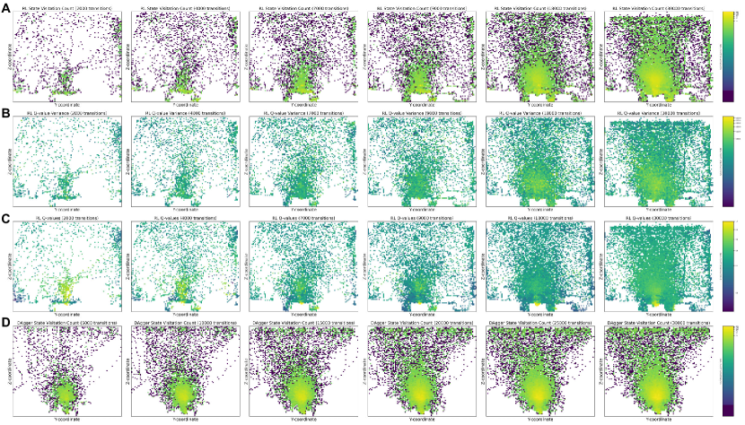
5.1 학습된 정책의 신뢰성
HIL-SERL 성능의 핵심적인 측면 중 하나는 모든 작업에서 100%의 성공률을 달성하는 높은 신뢰성이다. 우리는 이러한 신뢰성이 정책 샘플링을 통해 스스로 교정하는 강화학습 고유의 능력에서 비롯된다고 주장하며, 이를 통해 에이전트는 성공과 실패 모두로부터 학습하여 지속적으로 개선할 수 있다. 이와 대조적으로, 상호작용형 방법을 포함한 모방 학습 접근법은 이러한 자가 교정 메커니즘이 결여되어 있어, 동일한 양의 데이터로 이에 상응하는 성능을 달성하기가 훨씬 더 어렵다. Q-러닝의 수렴성에 대한 기존의 이론적 연구 [Papavassiliou and Russell, 1999, Bhandari et al., 2018, Jin et al., 2020, Yang and Wang, 2019]가 존재하지만, 우리의 분석은 학습 역학에 대한 직관적인 이해를 제공하는 데 초점을 맞춘다.
이를 설명하기 위해, 정밀한 조작이 필요하고 X 및 Y 방향의 대칭적 무작위화 덕분에 시각화하기 쉬운 RAM 삽입 작업을 분석한다. 우리는 말단 효과기(end-effector)의 Y 및 Z 위치를 기반으로, 그림 6에서 다양한 정책 체크포인트에 대한 타임스텝별 상태 방문 횟수의 히트맵을 시각화한다. 정책 학습을 통해, 초기 상태와 목표 위치를 연결하는 깔대기(funnel) 모양이 점진적으로 형성되는 것을 관찰할 수 있다. 이 깔대기는 빈 영역이 채워지면서 더욱 명확해지고, 목표에 가까워질 때 좁아지는데, 이는 정책의 신뢰도와 정밀도가 증가했음을 나타낸다. 시간이 지남에 따라 질량은 성공 가능성이 높은 영역으로 집중된다. 그 후 우리는 Q-함수 분산이 큰 상태로 정의되는 "임계 상태(critical states)"의 개념을 도입한다. 우리는 이 분산을 다음과 같이 계산한다:
| (4) |
각 데이터 포인트와 이와 관련된 정책 체크포인트에 대해, 모든 상태에서 행동( [-1, 1]로 정규화됨)에 [-0.2, 0.2] 범위의 균등 무작위 노이즈를 추가하고, 100개의 샘플을 사용한 몬테카를로 샘플링을 통해 Q-함수 분산을 계산한다. 분산이 크다는 것은 다른 행동을 취할 경우 상당히 다른(보통 훨씬 작은) Q-값을 초래하므로, 해당 상태가 정책의 성공에 결정적임을 나타낸다. 그림 6는 다양한 상태에서의 Q-값 및 그 분산의 히트맵도 보여준다. 이 플롯들은 정책이 가장 많이 방문한 상태가 더 높은 Q-값과 더 높은 Q-값 분산을 얻는 깔대기를 형성하고 있음을 명확히 보여준다. 이는 정책이 해당 영역을 강건하게 만들고 있으며, 동적 계획법(dynamic programming)을 통해 높은 Q-값으로 이어지는 행동과 중요한 상태들을 효과적으로 연결하고 있음을 나타낸다.
반면, 동일한 작업에 대한 HG-DAgger의 상태 방문 횟수 히트맵(그림 6의 네 번째 행)은 훨씬 더 희소한 분포를 보여준다. 깔대기 모양이 덜 뚜렷하고 평평하며 질량이 더 퍼져 있어, RL 사례에 비해 상태들이 더 균일하게 방문된다. 이는 RL이 자율적으로 탐색하고 작업 보상에 의해 유도되는 동적 계획법을 사용할 수 있는 반면, DAgger는 현재 정책 주변만 탐색할 수 있기 때문이다. 결과적으로 유사한 성능을 달성하기 위해 DAgger는 훨씬 더 많은 데모와 교정뿐만 아니라, 데이터 품질을 보장하기 위한 인간 작업자의 세심한 주의를 필요로 할 수 있다.
깔대기 내에서의 이러한 안정화 동작은 상태 기반의 정밀 조작 및 모션 계획 [Burridge et al., 1999, Tedrake et al., 2010] 분야에서 연구되어 왔다. 그러나 우리의 접근 방식은 인지 입력(perceptual inputs)을 직접 활용하고 RL 탐색을 사용하여 자율적으로 깔대기를 형성한다는 점에서 차이가 있다. 최적 제어(optimal control)에서 이와 유사한 개념은 지역 피드백 [Astrom and Murray, 2008]을 사용하여 공칭 궤적(nominal trajectories) 주변을 안정화하는 제어기를 개발하는 것이다. 우리의 경우, 데모와 교정은 RL 방법이 안정화를 위한 깔대기를 개발하는 기준이 되는 "공칭 궤적"으로 간주될 수 있다.
5.2 반응형 정책 및 예측형 정책
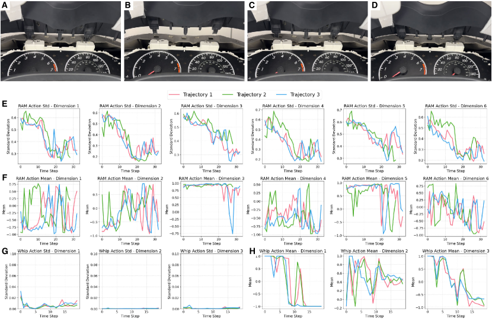
대부분의 고정밀 조작 작업을 해결하려면 즉각적인 감각 피드백에 신속하게 반응하여 실시간으로 정밀한 조정을 가능하게 하는 폐루프(closed-loop) 반응형 정책이 필요하다. 반면에 젠가 빼기나 물체 뒤집기와 같은 동적 조작 작업의 경우에는 미리 계획하고 동작을 일관되게 실행하는 개루프 예측형 정책을 채택하는 것이 바람직하다. 이를 확인하기 위해, 우리는 이러한 서로 다른 두 가지 유형의 정책을 필요로 하는 대표적인 두 작업인 젠가 빼기와 RAM 삽입을 선택하여 분석한다. 이러한 정책 유형 간의 차이를 시각화하기 위해, 그림 7에서 두 작업에 대해 학습된 가우시안 정책으로부터 계산된 행동을 플롯한다.
두 작업 모두에 대해, 시간에 따른 정책의 계산된 표준 편차와 평균을 플롯하여 세 개의 성공적인 궤적을 분석했다. 이 플롯들로부터 평균 행동은 두 경우 모두 넓은 범위의 값을 보이지만, 표준 편차는 뚜렷하게 대비되는 정책 동작을 드러낸다는 것을 관찰할 수 있다. 젠가 빼기 작업에서 표준 편차는 타임스텝 전반에 걸쳐 일관되게 낮은 수준(0에 매우 가까움)을 유지한다. 이는 개루프 동작이 바람직한 작업에 이상적인, 매우 확신에 차고 일관된 정책을 나타낸다. 테니스 선수가 반사 신경을 발달시키는 것과 유사하게, 정책은 정밀하고 미리 계획된 동작을 실행하도록 학습한다. 환경과의 상호작용을 통해 예측 오차를 최소화하도록 이 동작을 개선하여 일관된 실행을 이끌어낸다. 반대로 RAM 삽입 작업은 다른 패턴을 보인다. 초기에는 표준 편차가 훨씬 높아(약 0.6) 초기에 목표에 접근할 때의 불확실성을 반영한다. 그러나 시간이 지남에 따라 빠르게 감소하는데, 이는 처음에는 대략적인 접근 동작을 취하다가 목표 근처에 도달하면 더욱 정밀해짐을 시사한다. 이 작업은 작업의 정밀도 요구 사항으로 인해 긴 호라이즌에 걸친 예측 제어가 비현실적이기 때문에, 다양한 시나리오에서 오차를 수정할 수 있는 반응형 정책을 요구한다. 이러한 반응형 동작은 대시보드 패널 조립이나 타이밍 벨트 설치와 같이 복잡한 조작 작업에서 훨씬 더 두드러진다. 이러한 경우 정책은 감각 피드백을 기반으로 행동을 지속적으로 조정해야 하며, 그림 7에 표시된 것처럼 접촉을 해제하고 목표에 다시 접근하는 등 성공을 거두기 위해 여러 번의 시도가 필요한 경우가 많다. 이러한 시나리오에서의 더 높은 분산은 변화하는 조건에 신속하게 반응할 수 있는 정책의 준비 상태를 나타낸다.
이러한 유형의 반응형 동작은 에이전트가 환경과 상호작용함으로써 획득된다는 점에 주목할 가치가 있다. 즉, 에이전트는 이 동작을 "공짜로" 개발하는 것이며, 우리가 특정 동적 동작을 해결하기 위해 문제를 명시적으로 공식화하지 않는다. 대신, 원하는 반응은 지속적인 상호작용을 통해 해결책의 일부로서 자연스럽게 발현된다. 이전 연구 Marcucci et al. [2017], Hogan and Rodriguez [2016], Aceituno-Cabezas and Rodriguez [2020]는 이러한 접촉이 빈번한 조작 문제를 하이브리드 시스템을 위한 혼합 정수 계획법(mixed-integer programming)으로 공식화하려고 시도했으며, 이를 통해 정책이 다양한 접촉 모드와 이에 대응하는 동작을 계획할 수 있도록 했다. 그러나 이러한 방법은 계획 호라이즌의 길이에 따라 가능한 접촉 모드의 수가 기하급수적으로 증가하기 때문에, 계획 호라이즌이 길어질수록 계산적으로 다루기 힘들어질 수 있다. 또한, 실제 세계의 많은 작업에서 항상 사용 가능한 것은 아닌 정확한 상태 추정기(state estimators)를 필요로 한다.
이와 대조적으로, 우리의 방법은 인지를 직접 활용하여 접촉에 직면했을 때 반응형 동작을 학습한다. 상호작용을 통해 해결책을 찾는 데 필요한 필수 역학을 인코딩하며, 이러한 역학을 문제 공식화의 일부로 취급하지 않는다. 반면 이전의 접근 방식들은 문제 공식화 자체 내에 복잡하거나 다루기 힘든 역학을 포함시켜, 해결책을 도출하기 더 어렵고 확장성을 떨어뜨렸다.
종합적으로, 우리의 접근 방식은 단일한 알고리즘 프레임워크 내에서 이러한 서로 다른 정책 유형을 학습할 수 있는 유연성을 보여준다. 환경과 상호작용하고 행동의 결과를 관찰함으로써, 이 방법은 각 작업의 구체적인 요구 사항에 적응한다. 이러한 적응성은 시스템이 광범위한 조작 과제에 걸쳐 다양한 동작을 요구하는 작업들을 효과적으로 해결할 수 있도록 한다.
6 토의
제시된 결과는 로봇 조작 분야에서 발표된 기존의 최첨단 기술 수준을 실질적으로 발전시킨다. 우리의 연구는 올바른 설계 선택을 통해 모델 프리(model-free) RL이 인지 입력을 사용하여 다양한 복잡한 조작 작업을 효과적으로 해결할 수 있으며, 실용적인 시간 내에 실제 세계에서 직접 학습할 수 있음을 보여준다. 이 접근 방식으로 학습된 정책은 매우 우수한 성능을 보여 거의 완벽한 성공률을 달성하며, 모방 학습과 같은 대안적 접근 방식보다 실질적으로 더 빠른 사이클 타임을 보여준다.
결과 자체를 넘어, 본 연구에서 제시된 접근 방식은 더 광범위하고 중요한 영향력을 미칠 수 있다. 이는 높은 성능으로 광범위한 조작 기술을 획득하고 변화에 적응하기 위한 일반적인 프레임워크 역할을 할 수 있다. 이는 다품종 소량(High-Mix Low-Volume, HMLV) 제조 또는 "주문 제작" 생산 Jina et al. [1997], Shah and Ward [2003], Gan et al. [2023]에서 특히 가치가 있다. 이러한 생산 방식은 제품 수명 주기의 단축, 맞춤화, 민첩성 및 유연성에 대한 요구로 인해 전자, 반도체, 자동차, 항공우주와 같은 주요 산업에서 상당한 잠재력을 가지고 있다.
우리는 향후 연구를 위한 여러 기회를 보고 있다. 첫째, 우리의 접근 방식은 로봇 기초 모델(foundation models) [Brohan et al., 2023b, a, Collaboration et al., 2024, Team et al., 2024, Kim et al., 2024]을 학습시키기 위한 고품질 데이터를 생성하는 효과적인 도구 역할을 할 수 있다. 각 작업을 학습하는 데 비교적 짧은 시간이 소요되고 학습 과정이 대부분 자율적으로 이루어지기 때문에, 이 프레임워크를 사용하여 다양한 기술을 개발할 수 있다. 그 후 수렴된 정책을 실행하여 데이터를 수집하고, 이를 이러한 범용 모델에 증류(distill)할 수 있다. 둘째, 현재 학습 시간은 비교적 짧지만 각 작업은 여전히 처음부터 학습해야 한다. 서로 다른 로봇 하드웨어를 사용하여 다양한 작업을 해결하는 일반적인 조작 능력을 내포하는 가치 함수(value function)를 사전 학습함으로써 이 시간을 더욱 단축할 수 있다. 이렇게 사전 학습된 가치 함수는 특정 작업을 해결하기 위해 빠르게 미세 조정(fine-tuning)될 수 있다.
우리는 또한 우리 접근 방식의 몇 가지 한계를 인식하고 있다. 비록 우리가 다양하고 도전적인 작업들을 성공적으로 해결했지만, 샘플 복잡도(sample complexity) 문제가 더 두드러지는 훨씬 더 긴 호라이즌을 가진 작업으로 이 방법을 더 확장할 수 있을지는 여전히 불확실하다. 그러나 이러한 문제는 개선된 사전 학습 기술을 통하거나, 비전-언어 모델과 같이 긴 호라이즌의 작업을 일련의 짧은 하위 작업으로 자동 분할하는 방법을 채택함으로써 완화될 수 있다. 또한 실험에서 광범위한 무작위화를 수행하지 않았으며, 비정형 환경에서의 일반화 능력을 테스트하지 않았다는 점도 유념해야 한다. 본 논문의 주된 초점은 이 접근 방식이 높은 성능으로 광범위한 조작 기술을 획득하는 데 범용적으로 사용될 수 있음을 보여주는 것이다. 우리는 무작위화 문제를 Luo et al. [2021]에서와 같이 원하는 무작위화 수준에서 정책의 학습 기간을 연장함으로써 해결할 수 있다고 믿는다. 아울러, 일반화 문제는 대규모의 다양한 데이터셋으로 사전 학습된 비전 기초 모델을 통합함으로써 해결될 수 있을 것이다.
우리는 이 연구가 로봇 조작 문제를 해결하는 데 강화학습을 사용하고, 높은 성능을 달성하며, 궁극적으로 이를 실제 세계에 배포하는 길을 열어주기를 바란다.
References
- Aceituno-Cabezas and Rodriguez [2020] B. Aceituno-Cabezas and A. Rodriguez. A global quasi-dynamic model for contact-trajectory optimization. In RSS, 2020.
- Astrom and Murray [2008] Karl Johan Astrom and Richard M. Murray. Feedback Systems: An Introduction for Scientists and Engineers. Princeton University Press, USA, 2008. ISBN 0691135762.
- Azar et al. [2012] Mohammad Gheshlaghi Azar, Remi Munos, and Bert Kappen. On the sample complexity of reinforcement learning with a generative model, 2012. URL https://arxiv.org/abs/1206.6461.
- Ball et al. [2023] Philip J Ball, Laura Smith, Ilya Kostrikov, and Sergey Levine. Efficient online reinforcement learning with offline data. arXiv preprint arXiv:2302.02948, 2023.
- Bhandari et al. [2018] Jalaj Bhandari, Daniel Russo, and Raghav Singal. A finite time analysis of temporal difference learning with linear function approximation. In Sébastien Bubeck, Vianney Perchet, and Philippe Rigollet, editors, Proceedings of the 31st Conference On Learning Theory, volume 75 of Proceedings of Machine Learning Research, pages 1691–1692. PMLR, 06–09 Jul 2018.
- Brohan et al. [2023a] Anthony Brohan, Noah Brown, Justice Carbajal, Yevgen Chebotar, Xi Chen, Krzysztof Choromanski, Tianli Ding, Danny Driess, Avinava Dubey, Chelsea Finn, Pete Florence, Chuyuan Fu, Montse Gonzalez Arenas, Keerthana Gopalakrishnan, Kehang Han, Karol Hausman, Alexander Herzog, Jasmine Hsu, Brian Ichter, Alex Irpan, Nikhil Joshi, Ryan Julian, Dmitry Kalashnikov, Yuheng Kuang, Isabel Leal, Lisa Lee, Tsang-Wei Edward Lee, Sergey Levine, Yao Lu, Henryk Michalewski, Igor Mordatch, Karl Pertsch, Kanishka Rao, Krista Reymann, Michael Ryoo, Grecia Salazar, Pannag Sanketi, Pierre Sermanet, Jaspiar Singh, Anikait Singh, Radu Soricut, Huong Tran, Vincent Vanhoucke, Quan Vuong, Ayzaan Wahid, Stefan Welker, Paul Wohlhart, Jialin Wu, Fei Xia, Ted Xiao, Peng Xu, Sichun Xu, Tianhe Yu, and Brianna Zitkovich. Rt-2: Vision-language-action models transfer web knowledge to robotic control, 2023a. URL https://arxiv.org/abs/2307.15818.
- Brohan et al. [2023b] Anthony Brohan, Noah Brown, Justice Carbajal, Yevgen Chebotar, Joseph Dabis, Chelsea Finn, Keerthana Gopalakrishnan, Karol Hausman, Alex Herzog, Jasmine Hsu, Julian Ibarz, Brian Ichter, Alex Irpan, Tomas Jackson, Sally Jesmonth, Nikhil J Joshi, Ryan Julian, Dmitry Kalashnikov, Yuheng Kuang, Isabel Leal, Kuang-Huei Lee, Sergey Levine, Yao Lu, Utsav Malla, Deeksha Manjunath, Igor Mordatch, Ofir Nachum, Carolina Parada, Jodilyn Peralta, Emily Perez, Karl Pertsch, Jornell Quiambao, Kanishka Rao, Michael Ryoo, Grecia Salazar, Pannag Sanketi, Kevin Sayed, Jaspiar Singh, Sumedh Sontakke, Austin Stone, Clayton Tan, Huong Tran, Vincent Vanhoucke, Steve Vega, Quan Vuong, Fei Xia, Ted Xiao, Peng Xu, Sichun Xu, Tianhe Yu, and Brianna Zitkovich. Rt-1: Robotics transformer for real-world control at scale, 2023b. URL https://arxiv.org/abs/2212.06817.
- Burridge et al. [1999] R. R. Burridge, A. A. Rizzi, and D. E. Koditschek. Sequential composition of dynamically dexterous robot behaviors. The International Journal of Robotics Research, 18(6):534–555, 1999. 10.1177/02783649922066385.
- Chang et al. [2024] Haonan Chang, Abdeslam Boularias, and Siddarth Jain. Insert-one: One-shot robust visual-force servoing for novel object insertion with 6-dof tracking. In 2024 IEEE/RSJ International Conference on Intelligent Robots and Systems (IROS 2024), October 2024. URL https://www.merl.com/publications/TR2024-137.
- Chebotar et al. [2016] Yevgen Chebotar, Mrinal Kalakrishnan, Ali Yahya, Adrian Li, Stefan Schaal, and Sergey Levine. Path integral guided policy search, 2016. URL https://arxiv.org/abs/1610.00529.
- Chen et al. [2023] Tao Chen, Megha Tippur, Siyang Wu, Vikash Kumar, Edward Adelson, and Pulkit Agrawal. Visual dexterity: In-hand reorientation of novel and complex object shapes. Science Robotics, 8(84):eadc9244, 2023. 10.1126/scirobotics.adc9244. URL https://www.science.org/doi/abs/10.1126/scirobotics.adc9244.
- Chi et al. [2024] Cheng Chi, Zhenjia Xu, Siyuan Feng, Eric Cousineau, Yilun Du, Benjamin Burchfiel, Russ Tedrake, and Shuran Song. Diffusion policy: Visuomotor policy learning via action diffusion, 2024. URL https://arxiv.org/abs/2303.04137.
- Collaboration et al. [2024] Open X-Embodiment Collaboration, Abhishek Padalkar, Acorn Pooley, Ajinkya Jain, Alex Bewley, Alex Herzog, Alex Irpan, Alexander Khazatsky, Anant Rai, Anikait Singh, Anthony Brohan, Antonin Raffin, Ayzaan Wahid, Ben Burgess-Limerick, Beomjoon Kim, Bernhard Schölkopf, Brian Ichter, Cewu Lu, Charles Xu, Chelsea Finn, Chenfeng Xu, Cheng Chi, Chenguang Huang, Christine Chan, Chuer Pan, Chuyuan Fu, Coline Devin, Danny Driess, Deepak Pathak, Dhruv Shah, Dieter Büchler, Dmitry Kalashnikov, Dorsa Sadigh, Edward Johns, Federico Ceola, Fei Xia, Freek Stulp, Gaoyue Zhou, Gaurav S. Sukhatme, Gautam Salhotra, Ge Yan, Giulio Schiavi, Hao Su, Hao-Shu Fang, Haochen Shi, Heni Ben Amor, Henrik I Christensen, Hiroki Furuta, Homer Walke, Hongjie Fang, Igor Mordatch, Ilija Radosavovic, Isabel Leal, Jacky Liang, Jaehyung Kim, Jan Schneider, Jasmine Hsu, Jeannette Bohg, Jeffrey Bingham, Jiajun Wu, Jialin Wu, Jianlan Luo, Jiayuan Gu, Jie Tan, Jihoon Oh, Jitendra Malik, Jonathan Tompson, Jonathan Yang, Joseph J. Lim, João Silvério, Junhyek Han, Kanishka Rao, Karl Pertsch, Karol Hausman, Keegan Go, Keerthana Gopalakrishnan, Ken Goldberg, Kendra Byrne, Kenneth Oslund, Kento Kawaharazuka, Kevin Zhang, Keyvan Majd, Krishan Rana, Krishnan Srinivasan, Lawrence Yunliang Chen, Lerrel Pinto, Liam Tan, Lionel Ott, Lisa Lee, Masayoshi Tomizuka, Maximilian Du, Michael Ahn, Mingtong Zhang, Mingyu Ding, Mohan Kumar Srirama, Mohit Sharma, Moo Jin Kim, Naoaki Kanazawa, Nicklas Hansen, Nicolas Heess, Nikhil J Joshi, Niko Suenderhauf, Norman Di Palo, Nur Muhammad Mahi Shafiullah, Oier Mees, Oliver Kroemer, Pannag R Sanketi, Paul Wohlhart, Peng Xu, Pierre Sermanet, Priya Sundaresan, Quan Vuong, Rafael Rafailov, Ran Tian, Ria Doshi, Roberto Martín-Martín, Russell Mendonca, Rutav Shah, Ryan Hoque, Ryan Julian, Samuel Bustamante, Sean Kirmani, Sergey Levine, Sherry Moore, Shikhar Bahl, Shivin Dass, Shuran Song, Sichun Xu, Siddhant Haldar, Simeon Adebola, Simon Guist, Soroush Nasiriany, Stefan Schaal, Stefan Welker, Stephen Tian, Sudeep Dasari, Suneel Belkhale, Takayuki Osa, Tatsuya Harada, Tatsuya Matsushima, Ted Xiao, Tianhe Yu, Tianli Ding, Todor Davchev, Tony Z. Zhao, Travis Armstrong, Trevor Darrell, Vidhi Jain, Vincent Vanhoucke, Wei Zhan, Wenxuan Zhou, Wolfram Burgard, Xi Chen, Xiaolong Wang, Xinghao Zhu, Xuanlin Li, Yao Lu, Yevgen Chebotar, Yifan Zhou, Yifeng Zhu, Ying Xu, Yixuan Wang, Yonatan Bisk, Yoonyoung Cho, Youngwoon Lee, Yuchen Cui, Yueh hua Wu, Yujin Tang, Yuke Zhu, Yunzhu Li, Yusuke Iwasawa, Yutaka Matsuo, Zhuo Xu, and Zichen Jeff Cui. Open X-Embodiment: Robotic learning datasets and RT-X models. In Proceedings of the IEEE International Conference on Robotics and Automation (ICRA), Yokohama, Japan, 2024.
- Cui and Trinkle [2021] Jinda Cui and J. Trinkle. Toward next-generation learned robot manipulation. Science Robotics, 6, 2021.
- Deng et al. [2009] Jia Deng, Wei Dong, Richard Socher, Li-Jia Li, Kai Li, and Li Fei-Fei. Imagenet: A large-scale hierarchical image database. In 2009 IEEE Conference on Computer Vision and Pattern Recognition, pages 248–255, 2009. 10.1109/CVPR.2009.5206848.
- Dosovitskiy et al. [2021] Alexey Dosovitskiy, Lucas Beyer, Alexander Kolesnikov, Dirk Weissenborn, Xiaohua Zhai, Thomas Unterthiner, Mostafa Dehghani, Matthias Minderer, Georg Heigold, Sylvain Gelly, Jakob Uszkoreit, and Neil Houlsby. An image is worth 16x16 words: Transformers for image recognition at scale, 2021. URL https://arxiv.org/abs/2010.11929.
- Du et al. [2020] Simon S. Du, Sham M. Kakade, Ruosong Wang, and Lin F. Yang. Is a good representation sufficient for sample efficient reinforcement learning?, 2020. URL https://arxiv.org/abs/1910.03016.
- Du et al. [2023] Yuqing Du, Ksenia Konyushkova, Misha Denil, Akhil Raju, Jessica Landon, Felix Hill, Nando de Freitas, and Serkan Cabi. Vision-language models as success detectors. arXiv preprint arXiv:2303.07280, 2023.
- Fan et al. [2022] Linxi Fan, Guanzhi Wang, Yunfan Jiang, Ajay Mandlekar, Yuncong Yang, Haoyi Zhu, Andrew Tang, De-An Huang, Yuke Zhu, and Anima Anandkumar. Minedojo: Building open-ended embodied agents with internet-scale knowledge. In NeurIPS, 2022. URL http://papers.nips.cc/paper_files/paper/2022/hash/74a67268c5cc5910f64938cac4526a90-Abstract-Datasets_and_Benchmarks.html.
- Fazeli et al. [2019] N. Fazeli, M. Oller, J. Wu, Z. Wu, J. B. Tenenbaum, and A. Rodriguez. See, feel, act: Hierarchical learning for complex manipulation skills with multisensory fusion. Science Robotics, 4(26):eaav3123, 2019. 10.1126/scirobotics.aav3123. URL https://www.science.org/doi/abs/10.1126/scirobotics.aav3123.
- Florensa et al. [2017] Carlos Florensa, David Held, Markus Wulfmeier, Michael Zhang, and Pieter Abbeel. Reverse curriculum generation for reinforcement learning. In Sergey Levine, Vincent Vanhoucke, and Ken Goldberg, editors, Proceedings of the 1st Annual Conference on Robot Learning, volume 78 of Proceedings of Machine Learning Research, pages 482–495. PMLR, 13–15 Nov 2017.
- Florensa et al. [2018] Carlos Florensa, David Held, Xinyang Geng, and Pieter Abbeel. Automatic goal generation for reinforcement learning agents, 2018. URL https://arxiv.org/abs/1705.06366.
- Fu et al. [2018] Justin Fu, Avi Singh, Dibya Ghosh, Larry Yang, and Sergey Levine. Variational inverse control with events: A general framework for data-driven reward definition. Advances in neural information processing systems, 31, 2018.
- Gan et al. [2023] Zhi Lon Gan, Siti Nurmaya Musa, and Hwa Jen Yap. A review of the high-mix, low-volume manufacturing industry. Applied Sciences, 13(3), 2023. ISSN 2076-3417. 10.3390/app13031687. URL https://www.mdpi.com/2076-3417/13/3/1687.
- Gupta et al. [2021] Abhishek Gupta, Justin Yu, Tony Z. Zhao, Vikash Kumar, Aaron Rovinsky, Kelvin Xu, Thomas Devlin, and Sergey Levine. Reset-free reinforcement learning via multi-task learning: Learning dexterous manipulation behaviors without human intervention. In IEEE International Conference on Robotics and Automation, ICRA 2021, Xi’an, China, May 30 - June 5, 2021, pages 6664–6671. IEEE, 2021. 10.1109/ICRA48506.2021.9561384. URL https://doi.org/10.1109/ICRA48506.2021.9561384.
- Haarnoja et al. [2018] Tuomas Haarnoja, Aurick Zhou, Pieter Abbeel, and Sergey Levine. Soft actor-critic: Off-policy maximum entropy deep reinforcement learning with a stochastic actor. In International conference on machine learning, pages 1861–1870. PMLR, 2018.
- He et al. [2015] Kaiming He, Xiangyu Zhang, Shaoqing Ren, and Jian Sun. Deep residual learning for image recognition, 2015.
- Hester and Stone [2013] Todd Hester and Peter Stone. Texplore: real-time sample-efficient reinforcement learning for robots. Machine learning, 90:385–429, 2013.
- Hogan and Rodriguez [2016] Francois Robert Hogan and Alberto Rodriguez. Feedback control of the pusher-slider system: A story of hybrid and underactuated contact dynamics, 2016. URL https://arxiv.org/abs/1611.08268.
- Hu et al. [2024a] Hengyuan Hu, Suvir Mirchandani, and Dorsa Sadigh. Imitation bootstrapped reinforcement learning, 2024a. URL https://arxiv.org/abs/2311.02198.
- Hu et al. [2024b] Zheyuan Hu, Aaron Rovinsky, Jianlan Luo, Vikash Kumar, Abhishek Gupta, and Sergey Levine. REBOOT: reuse data for bootstrapping efficient real-world dexterous manipulation. arXiv preprint arXiv:2309.03322, 2024b.
- Hwangbo et al. [2019] Jemin Hwangbo, Joonho Lee, Alexey Dosovitskiy, Dario Bellicoso, Vassilios Tsounis, Vladlen Koltun, and Marco Hutter. Learning agile and dynamic motor skills for legged robots. Science Robotics, 4(26):eaau5872, 2019. 10.1126/scirobotics.aau5872. URL https://www.science.org/doi/abs/10.1126/scirobotics.aau5872.
- Ijspeert et al. [2013] Auke Jan Ijspeert, Jun Nakanishi, Heiko Hoffmann, Peter Pastor, and Stefan Schaal. Dynamical movement primitives: Learning attractor models for motor behaviors. Neural Computation, 25(2):328–373, 2013. 10.1162/NECO_a_00393.
- Jin et al. [2018] Chi Jin, Zeyuan Allen-Zhu, Sebastien Bubeck, and Michael I Jordan. Is q-learning provably efficient? In S. Bengio, H. Wallach, H. Larochelle, K. Grauman, N. Cesa-Bianchi, and R. Garnett, editors, Advances in Neural Information Processing Systems, volume 31. Curran Associates, Inc., 2018. URL https://proceedings.neurips.cc/paper_files/paper/2018/file/d3b1fb02964aa64e257f9f26a31f72cf-Paper.pdf.
- Jin et al. [2020] Chi Jin, Zhuoran Yang, Zhaoran Wang, and Michael I Jordan. Provably efficient reinforcement learning with linear function approximation. In Jacob Abernethy and Shivani Agarwal, editors, Proceedings of Thirty Third Conference on Learning Theory, volume 125 of Proceedings of Machine Learning Research, pages 2137–2143. PMLR, 09–12 Jul 2020. URL https://proceedings.mlr.press/v125/jin20a.html.
- Jin et al. [2019] Shiyu Jin, Changhao Wang, and Masayoshi Tomizuka. Robust deformation model approximation for robotic cable manipulation. In 2019 IEEE/RSJ International Conference on Intelligent Robots and Systems (IROS), pages 6586–6593, 2019. 10.1109/IROS40897.2019.8968157.
- Jin et al. [2021] Shiyu Jin, Xinghao Zhu, Changhao Wang, and Masayoshi Tomizuka. Contact pose identification for peg-in-hole assembly under uncertainties. In 2021 American Control Conference (ACC), pages 48–53, 2021. 10.23919/ACC50511.2021.9482981.
- Jina et al. [1997] Jay Jina, Arindam K. Bhattacharya, and Andrew Walton. Applying lean principles for high product variety and low volumes: some issues and propositions. Logistics Information Management, 10:5–13, 1997. URL https://api.semanticscholar.org/CorpusID:110348308.
- Johannink et al. [2019] Tobias Johannink, Shikhar Bahl, Ashvin Nair, Jianlan Luo, Avinash Kumar, Matthias Loskyll, Juan Aparicio Ojea, Eugen Solowjow, and Sergey Levine. Residual reinforcement learning for robot control. In 2019 International Conference on Robotics and Automation (ICRA), pages 6023–6029, 2019. 10.1109/ICRA.2019.8794127.
- Kalashnikov et al. [2018] Dmitry Kalashnikov, Alex Irpan, Peter Pastor, Julian Ibarz, Alexander Herzog, Eric Jang, Deirdre Quillen, Ethan Holly, Mrinal Kalakrishnan, Vincent Vanhoucke, and Sergey Levine. Qt-opt: Scalable deep reinforcement learning for vision-based robotic manipulation, 2018. URL https://arxiv.org/abs/1806.10293.
- Kalashnikov et al. [2021] Dmitry Kalashnikov, Jacob Varley, Yevgen Chebotar, Benjamin Swanson, Rico Jonschkowski, Chelsea Finn, Sergey Levine, and Karol Hausman. Mt-opt: Continuous multi-task robotic reinforcement learning at scale, 2021. URL https://arxiv.org/abs/2104.08212.
- Kearns and Singh [1998] Michael J. Kearns and Satinder P. Singh. Near-optimal reinforcement learning in polynominal time. In Proceedings of the Fifteenth International Conference on Machine Learning, ICML ’98, page 260–268, San Francisco, CA, USA, 1998. Morgan Kaufmann Publishers Inc. ISBN 1558605568.
- Kelly et al. [2018] Michael Kelly, Chelsea Sidrane, K. Driggs-Campbell, and Mykel J. Kochenderfer. Hg-dagger: Interactive imitation learning with human experts. 2019 International Conference on Robotics and Automation (ICRA), pages 8077–8083, 2018. URL https://api.semanticscholar.org/CorpusID:52939433.
- Kim et al. [2024] Moo Jin Kim, Karl Pertsch, Siddharth Karamcheti, Ted Xiao, Ashwin Balakrishna, Suraj Nair, Rafael Rafailov, Ethan Foster, Grace Lam, Pannag Sanketi, Quan Vuong, Thomas Kollar, Benjamin Burchfiel, Russ Tedrake, Dorsa Sadigh, Sergey Levine, Percy Liang, and Chelsea Finn. Openvla: An open-source vision-language-action model, 2024. URL https://arxiv.org/abs/2406.09246.
- Kimble et al. [2020] Kenneth Kimble, Karl Van Wyk, Joe Falco, Elena Messina, Yu Sun, Mizuho Shibata, Wataru Uemura, and Yasuyoshi Yokokohji. Benchmarking protocols for evaluating small parts robotic assembly systems. IEEE Robotics and Automation Letters, 5(2):883–889, 2020. 10.1109/LRA.2020.2965869.
- Kolesnikov et al. [2020] Alexander Kolesnikov, Lucas Beyer, Xiaohua Zhai, Joan Puigcerver, Jessica Yung, Sylvain Gelly, and Neil Houlsby. Big transfer (bit): General visual representation learning, 2020. URL https://arxiv.org/abs/1912.11370.
- Kormushev et al. [2010] Petar Kormushev, Sylvain Calinon, and Darwin G. Caldwell. Robot motor skill coordination with em-based reinforcement learning. In 2010 IEEE/RSJ International Conference on Intelligent Robots and Systems, pages 3232–3237, 2010. 10.1109/IROS.2010.5649089.
- Kostrikov et al. [2023] Ilya Kostrikov, Laura M. Smith, and Sergey Levine. Demonstrating A walk in the park: Learning to walk in 20 minutes with model-free reinforcement learning. In Kostas E. Bekris, Kris Hauser, Sylvia L. Herbert, and Jingjin Yu, editors, Robotics: Science and Systems XIX, Daegu, Republic of Korea, July 10-14, 2023, 2023. 10.15607/RSS.2023.XIX.056. URL https://doi.org/10.15607/RSS.2023.XIX.056.
- Lee et al. [2020] Joonho Lee, Jemin Hwangbo, Lorenz Wellhausen, Vladlen Koltun, and Marco Hutter. Learning quadrupedal locomotion over challenging terrain. Science Robotics, 5(47):eabc5986, 2020. 10.1126/scirobotics.abc5986. URL https://www.science.org/doi/abs/10.1126/scirobotics.abc5986.
- Levine et al. [2016] Sergey Levine, Chelsea Finn, Trevor Darrell, and Pieter Abbeel. End-to-end training of deep visuomotor policies. J. Mach. Learn. Res., 17:39:1–39:40, 2016. URL http://jmlr.org/papers/v17/15-522.html.
- Li et al. [2021] Kevin Li, Abhishek Gupta, Ashwin Reddy, Vitchyr H. Pong, Aurick Zhou, Justin Yu, and Sergey Levine. MURAL: meta-learning uncertainty-aware rewards for outcome-driven reinforcement learning. In Marina Meila and Tong Zhang, editors, Proceedings of the 38th International Conference on Machine Learning, ICML 2021, 18-24 July 2021, Virtual Event, volume 139 of Proceedings of Machine Learning Research, pages 6346–6356. PMLR, 2021. URL http://proceedings.mlr.press/v139/li21g.html.
- Loquercio et al. [2021] Antonio Loquercio, Elia Kaufmann, René Ranftl, Matthias Müller, Vladlen Koltun, and Davide Scaramuzza. Learning high-speed flight in the wild. Science Robotics, 6(59):eabg5810, 2021. 10.1126/scirobotics.abg5810. URL https://www.science.org/doi/abs/10.1126/scirobotics.abg5810.
- Luo et al. [2018] Jianlan Luo, Eugen Solowjow, Chengtao Wen, Juan Aparicio Ojea, and Alice M Agogino. Deep reinforcement learning for robotic assembly of mixed deformable and rigid objects. In 2018 IEEE/RSJ International Conference on Intelligent Robots and Systems (IROS), pages 2062–2069. IEEE, 2018.
- Luo et al. [2019] Jianlan Luo, Eugen Solowjow, Chengtao Wen, Juan Aparicio Ojea, Alice M Agogino, Aviv Tamar, and Pieter Abbeel. Reinforcement learning on variable impedance controller for high-precision robotic assembly. In 2019 International Conference on Robotics and Automation (ICRA), pages 3080–3087. IEEE, 2019.
- Luo et al. [2021] Jianlan Luo, Oleg Sushkov, Rugile Pevceviciute, Wenzhao Lian, Chang Su, Mel Vecerik, Ning Ye, Stefan Schaal, and Jonathan Scholz. Robust Multi-Modal Policies for Industrial Assembly via Reinforcement Learning and Demonstrations: A Large-Scale Study. In Proceedings of Robotics: Science and Systems, Virtual, July 2021. 10.15607/RSS.2021.XVII.088.
- Luo et al. [2023] Jianlan Luo, Perry Dong, Yuexiang Zhai, Yi Ma, and Sergey Levine. Rlif: Interactive imitation learning as reinforcement learning. arXiv preprint arXiv:2311.12996, 2023.
- Luo et al. [2024a] Jianlan Luo, Zheyuan Hu, Charles Xu, You Liang Tan, Jacob Berg, Archit Sharma, Stefan Schaal, Chelsea Finn, Abhishek Gupta, and Sergey Levine. Serl: A software suite for sample-efficient robotic reinforcement learning. In 2024 IEEE International Conference on Robotics and Automation (ICRA), pages 16961–16969, 2024a. 10.1109/ICRA57147.2024.10610040.
- Luo et al. [2024b] Jianlan Luo, Charles Xu, Xinyang Geng, Gilbert Feng, Kuan Fang, Liam Tan, Stefan Schaal, and Sergey Levine. Multistage cable routing through hierarchical imitation learning. IEEE Transactions on Robotics, 40:1476–1491, 2024b. 10.1109/TRO.2024.3353075.
- Ma et al. [2023a] Yecheng Jason Ma, Vikash Kumar, Amy Zhang, Osbert Bastani, and Dinesh Jayaraman. LIV: language-image representations and rewards for robotic control. In Andreas Krause, Emma Brunskill, Kyunghyun Cho, Barbara Engelhardt, Sivan Sabato, and Jonathan Scarlett, editors, International Conference on Machine Learning, ICML 2023, 23-29 July 2023, Honolulu, Hawaii, USA, volume 202 of Proceedings of Machine Learning Research, pages 23301–23320. PMLR, 2023a. URL https://proceedings.mlr.press/v202/ma23b.html.
- Ma et al. [2023b] Yecheng Jason Ma, Shagun Sodhani, Dinesh Jayaraman, Osbert Bastani, Vikash Kumar, and Amy Zhang. VIP: towards universal visual reward and representation via value-implicit pre-training. In The Eleventh International Conference on Learning Representations, ICLR 2023, Kigali, Rwanda, May 1-5, 2023. OpenReview.net, 2023b. URL https://openreview.net/pdf?id=YJ7o2wetJ2.
- Mahmoudieh et al. [2022] Parsa Mahmoudieh, Deepak Pathak, and Trevor Darrell. Zero-shot reward specification via grounded natural language. In Kamalika Chaudhuri, Stefanie Jegelka, Le Song, Csaba Szepesvári, Gang Niu, and Sivan Sabato, editors, International Conference on Machine Learning, ICML 2022, 17-23 July 2022, Baltimore, Maryland, USA, volume 162 of Proceedings of Machine Learning Research, pages 14743–14752. PMLR, 2022. URL https://proceedings.mlr.press/v162/mahmoudieh22a.html.
- Marcucci et al. [2017] Tobia Marcucci, Robin Deits, Marco Gabiccini, Antonio Bicchi, and Russ Tedrake. Approximate hybrid model predictive control for multi-contact push recovery in complex environments. In 2017 IEEE-RAS 17th International Conference on Humanoid Robotics (Humanoids), pages 31–38, 2017. 10.1109/HUMANOIDS.2017.8239534.
- Mason and Lynch [1993] M.T. Mason and K.M. Lynch. Dynamic manipulation. In Proceedings of 1993 IEEE/RSJ International Conference on Intelligent Robots and Systems (IROS ’93), volume 1, pages 152–159 vol.1, 1993. 10.1109/IROS.1993.583093.
- Mnih et al. [2013] Volodymyr Mnih, Koray Kavukcuoglu, David Silver, Alex Graves, Ioannis Antonoglou, Daan Wierstra, and Martin Riedmiller. Playing atari with deep reinforcement learning. arXiv preprint arXiv:1312.5602, 2013.
- Morgan* et al. [2021] Andrew Morgan*, Bowen Wen*, Junchi Liang, Abdeslam Boularias, Aaron Dollar, and Kostas Bekris. Vision-driven compliant manipulation for reliable; high-precision assembly tasks. In Robotics: Science and Systems XVII, RSS2021. Robotics: Science and Systems Foundation, July 2021. 10.15607/rss.2021.xvii.070. URL http://dx.doi.org/10.15607/RSS.2021.XVII.070.
- Nagabandi et al. [2019] Anusha Nagabandi, Kurt Konolige, Sergey Levine, and Vikash Kumar. Deep dynamics models for learning dexterous manipulation. In Leslie Pack Kaelbling, Danica Kragic, and Komei Sugiura, editors, 3rd Annual Conference on Robot Learning, CoRL 2019, Osaka, Japan, October 30 - November 1, 2019, Proceedings, volume 100 of Proceedings of Machine Learning Research, pages 1101–1112. PMLR, 2019. URL http://proceedings.mlr.press/v100/nagabandi20a.html.
- Ng et al. [1999] Andrew Y. Ng, Daishi Harada, and Stuart J. Russell. Policy invariance under reward transformations: Theory and application to reward shaping. In Proceedings of the Sixteenth International Conference on Machine Learning, ICML ’99, page 278–287, San Francisco, CA, USA, 1999. Morgan Kaufmann Publishers Inc. ISBN 1558606122.
- Papavassiliou and Russell [1999] Vassilis A. Papavassiliou and Stuart Russell. Convergence of reinforcement learning with general function approximators. In Proceedings of the 16th International Joint Conference on Artificial Intelligence - Volume 2, IJCAI’99, page 748–755, San Francisco, CA, USA, 1999. Morgan Kaufmann Publishers Inc.
- Popov et al. [2017] Ivaylo Popov, Nicolas Heess, Timothy Lillicrap, Roland Hafner, Gabriel Barth-Maron, Matej Vecerik, Thomas Lampe, Yuval Tassa, Tom Erez, and Martin Riedmiller. Data-efficient deep reinforcement learning for dexterous manipulation. arXiv preprint arXiv:1704.03073, 2017.
- Radford et al. [2021] Alec Radford, Jong Wook Kim, Chris Hallacy, Aditya Ramesh, Gabriel Goh, Sandhini Agarwal, Girish Sastry, Amanda Askell, Pamela Mishkin, Jack Clark, Gretchen Krueger, and Ilya Sutskever. Learning transferable visual models from natural language supervision, 2021. URL https://arxiv.org/abs/2103.00020.
- Rafailov et al. [2021] Rafael Rafailov, Tianhe Yu, Aravind Rajeswaran, and Chelsea Finn. Offline reinforcement learning from images with latent space models. In Ali Jadbabaie, John Lygeros, George J. Pappas, Pablo A. Parrilo, Benjamin Recht, Claire J. Tomlin, and Melanie N. Zeilinger, editors, Proceedings of the 3rd Annual Conference on Learning for Dynamics and Control, L4DC 2021, 7-8 June 2021, Virtual Event, Switzerland, volume 144 of Proceedings of Machine Learning Research, pages 1154–1168. PMLR, 2021. URL http://proceedings.mlr.press/v144/rafailov21a.html.
- Rajeswaran et al. [2018] Aravind Rajeswaran, Vikash Kumar, Abhishek Gupta, Giulia Vezzani, John Schulman, Emanuel Todorov, and Sergey Levine. Learning complex dexterous manipulation with deep reinforcement learning and demonstrations. In Proceedings of Robotics: Science and Systems, Pittsburgh, Pennsylvania, June 2018. 10.15607/RSS.2018.XIV.049.
- Riedmiller et al. [2009] Martin Riedmiller, Thomas Gabel, Roland Hafner, and Sascha Lange. Reinforcement learning for robot soccer. Autonomous Robots, 27:55–73, 2009.
- Ross et al. [2011] Stéphane Ross, Geoffrey Gordon, and Drew Bagnell. A reduction of imitation learning and structured prediction to no-regret online learning. In Proceedings of the fourteenth international conference on artificial intelligence and statistics, pages 627–635, 2011.
- Schoettler et al. [2020] Gerrit Schoettler, Ashvin Nair, Jianlan Luo, Shikhar Bahl, Juan Aparicio Ojea, Eugen Solowjow, and Sergey Levine. Deep reinforcement learning for industrial insertion tasks with visual inputs and natural rewards. In 2020 IEEE/RSJ International Conference on Intelligent Robots and Systems (IROS), pages 5548–5555, 2020. 10.1109/IROS45743.2020.9341714.
- Shah and Ward [2003] Rachna Shah and Peter T Ward. Lean manufacturing: context, practice bundles, and performance. Journal of Operations Management, 21(2):129–149, 2003. ISSN 0272-6963.
- Sharma et al. [2021] Archit Sharma, Kelvin Xu, Nikhil Sardana, Abhishek Gupta, Karol Hausman, Sergey Levine, and Chelsea Finn. Autonomous reinforcement learning: Benchmarking and formalism. arXiv preprint arXiv:2112.09605, 2021.
- Sharma et al. [2023] Archit Sharma, Ahmed M. Ahmed, Rehaan Ahmad, and Chelsea Finn. Self-improving robots: End-to-end autonomous visuomotor reinforcement learning. CoRR, abs/2303.01488, 2023. 10.48550/arXiv.2303.01488. URL https://doi.org/10.48550/arXiv.2303.01488.
- Shivakumar et al. [2023] Kaushik Shivakumar, Vainavi Viswanath, Anrui Gu, Yahav Avigal, Justin Kerr, Jeffrey Ichnowski, Richard Cheng, Thomas Kollar, and Ken Goldberg. Sgtm 2.0: Autonomously untangling long cables using interactive perception. In 2023 IEEE International Conference on Robotics and Automation (ICRA), pages 5837–5843, 2023. 10.1109/ICRA48891.2023.10160574.
- Song et al. [2015] Hee-Chan Song, Min-Cheol Kim, and Jae-Bok Song. Usb assembly strategy based on visual servoing and impedance control. In 2015 12th International Conference on Ubiquitous Robots and Ambient Intelligence (URAI), pages 114–117, 2015. 10.1109/URAI.2015.7358873.
- Song et al. [2023] Yuda Song, Yifei Zhou, Ayush Sekhari, Drew Bagnell, Akshay Krishnamurthy, and Wen Sun. Hybrid RL: Using both offline and online data can make RL efficient. In The Eleventh International Conference on Learning Representations, 2023. URL https://openreview.net/forum?id=yyBis80iUuU.
- Spector et al. [2022] Oren Spector, Vladimir Tchuiev, and Dotan Di Castro. Insertionnet 2.0: Minimal contact multi-step insertion using multimodal multiview sensory input, 2022. URL https://arxiv.org/abs/2203.01153.
- Su et al. [2022] Jianhua Su, Chuankai Liu, and Rui Li. Robot precision assembly combining with passive and active compliant motions. IEEE Transactions on Industrial Electronics, 69(8):8157–8167, 2022. 10.1109/TIE.2021.3108710.
- Tang et al. [2016] Te Tang, Hsien-Chung Lin, Yu Zhao, Wenjie Chen, and Masayoshi Tomizuka. Autonomous alignment of peg and hole by force/torque measurement for robotic assembly. In 2016 IEEE International Conference on Automation Science and Engineering (CASE), pages 162–167, 2016. 10.1109/COASE.2016.7743375.
- Team et al. [2024] Octo Model Team, Dibya Ghosh, Homer Walke, Karl Pertsch, Kevin Black, Oier Mees, Sudeep Dasari, Joey Hejna, Tobias Kreiman, Charles Xu, Jianlan Luo, You Liang Tan, Lawrence Yunliang Chen, Pannag Sanketi, Quan Vuong, Ted Xiao, Dorsa Sadigh, Chelsea Finn, and Sergey Levine. Octo: An open-source generalist robot policy, 2024. URL https://arxiv.org/abs/2405.12213.
- Tebbe et al. [2021] Jonas Tebbe, Lukas Krauch, Yapeng Gao, and Andreas Zell. Sample-efficient reinforcement learning in robotic table tennis. In 2021 IEEE international conference on robotics and automation (ICRA), pages 4171–4178. IEEE, 2021.
- Tedrake et al. [2010] Russ Tedrake, Ian R. Manchester, Mark Tobenkin, and John W. Roberts. Lqr-trees: Feedback motion planning via sums-of-squares verification. The International Journal of Robotics Research, 29(8):1038–1052, 2010. 10.1177/0278364910369189.
- Theodorou et al. [2010] Evangelos Theodorou, Jonas Buchli, and Stefan Schaal. A generalized path integral control approach to reinforcement learning. Journal of Machine Learning Research, 11(104):3137–3181, 2010. URL http://jmlr.org/papers/v11/theodorou10a.html.
- van Hasselt et al. [2015] Hado van Hasselt, Arthur Guez, and David Silver. Deep reinforcement learning with double q-learning, 2015. URL https://arxiv.org/abs/1509.06461.
- Viswanath et al. [2022] Vainavi Viswanath, Kaushik Shivakumar, Justin Kerr, Brijen Thananjeyan, Ellen Novoseller, Jeffrey Ichnowski, Alejandro Escontrela, Michael Laskey, Joseph E. Gonzalez, and Ken Goldberg. Autonomously untangling long cables, 2022. URL https://arxiv.org/abs/2207.07813.
- Viswanath et al. [2023] Vainavi Viswanath, Kaushik Shivakumar, Jainil Ajmera, Mallika Parulekar, Justin Kerr, Jeffrey Ichnowski, Richard Cheng, Thomas Kollar, and Ken Goldberg. Handloom: Learned tracing of one-dimensional objects for inspection and manipulation, 2023. URL https://arxiv.org/abs/2303.08975.
- Wu et al. [2022] Philipp Wu, Alejandro Escontrela, Danijar Hafner, Pieter Abbeel, and Ken Goldberg. Daydreamer: World models for physical robot learning. In Karen Liu, Dana Kulic, and Jeffrey Ichnowski, editors, Conference on Robot Learning, CoRL 2022, 14-18 December 2022, Auckland, New Zealand, volume 205 of Proceedings of Machine Learning Research, pages 2226–2240. PMLR, 2022. URL https://proceedings.mlr.press/v205/wu23c.html.
- Xie et al. [2022] Annie Xie, Fahim Tajwar, Archit Sharma, and Chelsea Finn. When to ask for help: Proactive interventions in autonomous reinforcement learning. In NeurIPS, 2022. URL http://papers.nips.cc/paper_files/paper/2022/hash/6bf82cc56a5fa0287c438baa8be65a70-Abstract-Conference.html.
- Yang and Wang [2019] Lin F. Yang and Mengdi Wang. Sample-optimal parametric q-learning using linearly additive features, 2019. URL https://arxiv.org/abs/1902.04779.
- Yang et al. [2020] Yuxiang Yang, Ken Caluwaerts, Atil Iscen, Tingnan Zhang, Jie Tan, and Vikas Sindhwani. Data efficient reinforcement learning for legged robots. In Conference on Robot Learning, pages 1–10. PMLR, 2020.
- Zhan et al. [2021] Albert Zhan, Ruihan Zhao, Lerrel Pinto, Pieter Abbeel, and Michael Laskin. A framework for efficient robotic manipulation. In Deep RL Workshop NeurIPS 2021, 2021.
- Zhao et al. [2022] Tony Z. Zhao, Jianlan Luo, Oleg Sushkov, Rugile Pevceviciute, Nicolas Heess, Jon Scholz, Stefan Schaal, and Sergey Levine. Offline meta-reinforcement learning for industrial insertion. In 2022 International Conference on Robotics and Automation (ICRA), pages 6386–6393, 2022. 10.1109/ICRA46639.2022.9812312.
- Zhu et al. [2019] Henry Zhu, Abhishek Gupta, Aravind Rajeswaran, Sergey Levine, and Vikash Kumar. Dexterous manipulation with deep reinforcement learning: Efficient, general, and low-cost. In International Conference on Robotics and Automation, ICRA 2019, Montreal, QC, Canada, May 20-24, 2019, pages 3651–3657. IEEE, 2019. 10.1109/ICRA.2019.8794102. URL https://doi.org/10.1109/ICRA.2019.8794102.
- Zhu et al. [2020] Henry Zhu, Justin Yu, Abhishek Gupta, Dhruv Shah, Kristian Hartikainen, Avi Singh, Vikash Kumar, and Sergey Levine. The ingredients of real world robotic reinforcement learning. In 8th International Conference on Learning Representations, ICLR 2020, Addis Ababa, Ethiopia, April 26-30, 2020. OpenReview.net, 2020. URL https://openreview.net/forum?id=rJe2syrtvS.
감사의 글
저자들은 매우 유익한 토론을 나누어 준 Kyle Stachowicz와 Qiyang Li에게 감사를 표한다.
연구비 지원:
본 연구는 AI Institute, ONR N00014-20-1-2383, 및 NSF IIS-2150826의 지원을 일부 받아 수행되었다.
저자 기여:
J.L.은 연구를 설계하고, 아이디어를 구상하며 논문의 주요 방법을 고안하였고, 프로토타입을 구현하고 초기 실험을 수행하였으며, 모든 실험에 대해 실무적인 지도를 제공하고, 결과를 분석 및 해석하였으며, 논문을 작성하고 포지셔닝하였다. C.X.는 연구 설계에 기여하였고, 주요 연구 코드베이스를 유지 관리하였으며, 하드웨어 설정을 준비하고, 상당한 양의 실험을 수행하였으며, 논문을 위한 모든 그림과 비디오를 준비하였다. J.W.는 연구 설계에 기여하였고, 주요 연구 코드베이스를 유지 관리하였으며, 대량의 실험을 수행하였고, 공개 배포를 위해 코드베이스를 정리하였다. S.L.은 연구 설계에 기여하였고, 프로젝트를 자문하였으며, 논문을 편집하고 포지셔닝하였다.
이해관계 상충:
선언할 이해관계 상충이 없다.
데이터 및 자료 제공 가능 여부:
관련 비디오와 코드는 프로젝트 웹사이트 https://hil-serl.github.io/에서 확인할 수 있다.
추가 자료
부록 A 작업 설정 및 정책 학습 세부 사항
본 섹션에서는 하드웨어와 소프트웨어를 포함하여 각 작업이 어떻게 설정되는지에 대한 세부 사항과 정책 학습에 대한 세부 사항을 제공한다.
A.1 RAM 삽입
그림 8은 메인보드 조립 작업의 하드웨어 설정을 보여주며, 로봇, 카메라 배치 및 작업 배치를 나타낸다.
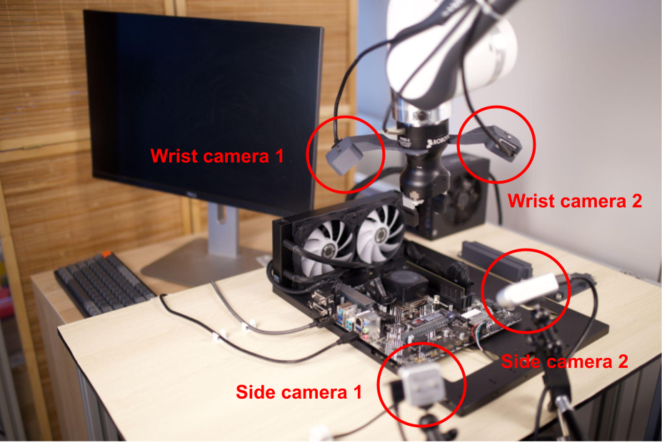
A.1.1 크롭된 이미지
그림 9에 나타난 바와 같이, 장면에서 작업과 관련된 부분에 집중할 수 있도록 이미지를 크롭(crop)하였다.
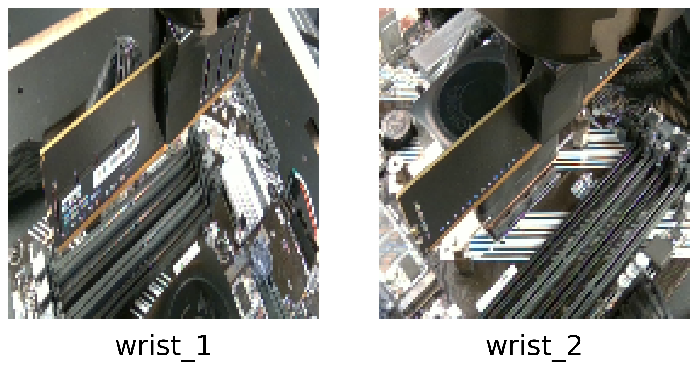
A.1.2 정책 학습 세부 사항
표 2에 이 작업에 대한 정책 학습의 추가적인 세부 사항을 보고한다.
| Parameter | Value |
| Observation space | wrist_1, wrist_2, tcp_pose, tcp_vel, tcp_f/t |
| Action space | 6D twist |
| Reward function | Binary classifier |
| Classifier views | wrist_1, wrist_2, |
| Classifier accuracy | 97% |
| Initial offline demonstrations | 20 |
| Environment update frequency | 10 HZ |
| Max episode length | 100 environment steps |
| Reset method | Scripted reset |
| Randomization range | 4 cm in x and y, 6 deg in rz |
| Proprio encoder size | 64 |
| Policy MLP size | 256x256 |
| Total number of RL transitions | 32000 |
| Discount factor | 0.97 |
| Optimizer | Adam |
| Learning rate | 3e-4 |
| Image augmentation | Random crop |
A.2 SSD 조립
그림 8은 메인보드 조립 작업을 위한 하드웨어 구성을 보여주며, 로봇, 카메라 배치 및 작업 배치를 나타낸다.
A.2.1 크롭된 이미지
그림 10에 나타난 바와 같이, 장면에서 작업과 관련된 부분에 집중할 수 있도록 이미지를 크롭(crop)하였다.
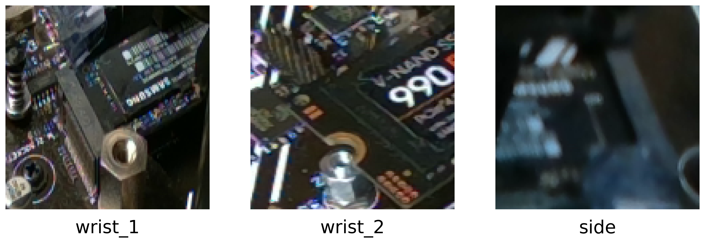
A.2.2 정책 학습 세부 사항
표 3에 이 작업에 대한 정책 학습의 추가적인 세부 사항을 보고한다.
| Parameter | Value |
| Observation space | wrist_1, wrist_2, side_2, tcp_pose, tcp_vel, tcp_f/t |
| Action space | 6D twist |
| Reward function | Binary Classifier |
| Classifier views | wrist_1, wrist_2, side_2 |
| Classifier accuracy | 95% |
| Initial offline demonstrations | 20 |
| Environment update frequency | 10 HZ |
| Max episode length | 100 environment steps |
| Reset method | Scripted reset |
| Randomization range | 2 cm in x and y, 1 deg in rz |
| Proprio encoder size | 64 |
| Policy MLP size | 256x256 |
| Total number of RL transitions | 21000 |
| Discount factor | 0.97 |
| Optimizer | Adam |
| Learning rate | 3e-4 |
| Image augmentation | Random crop |
A.3 USB 움켜쥐기 및 삽입
그림 8은 메인보드 조립 작업을 위한 하드웨어 구성을 보여주며, 로봇, 카메라 배치 및 작업 배치를 나타낸다.
A.3.1 크롭된 이미지
그림 11에 나타난 바와 같이, 장면에서 작업과 관련된 부분에 집중할 수 있도록 이미지를 크롭하였다.
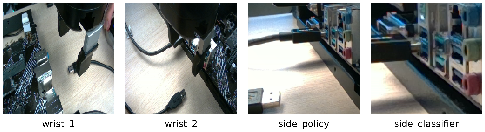
A.3.2 정책 학습 세부 사항
표 4에 이 작업에 대한 정책 학습(policy training)의 추가적인 세부 사항을 보고한다.
| Parameter | Value |
| Observation space | wrist_1, wrist_2, side_1, tcp_pose, tcp_vel, tcp_f/t, gripper_pos |
| Action space | 6D twist and 1D discrete gripper control |
| Reward function | Binary classifier |
| Classifier views | side_1 |
| Classifier accuracy | 96% |
| Initial offline demonstrations | 20 |
| Environment update frequency | 10 HZ |
| Max episode length | 120 environment steps |
| Reset method | Scripted reset |
| Randomization range | 2 cm in x and y, 10 deg in rz |
| Proprio encoder size | 64 |
| Motion policy MLP size | 256x256 |
| Grasp critic MLP size | 256x256 |
| Total number of RL transitions | 50000 |
| Discount factor | 0.98 |
| Optimizer | Adam |
| Learning rate | 3e-4 |
| Image augmentation | Random crop |
A.4 케이블 클리핑 (Cable Clipping)
그림 8은 메인보드 조립 작업을 위한 하드웨어 구성을 보여주며, 로봇, 카메라 배치 및 작업 배열을 나타낸다.
A.4.1 크롭된 이미지 (Cropped Images)
그림 12에 나타난 바와 같이, 장면에서 작업과 관련된 부분에 집중하기 위해 이미지를 크롭(crop)하였다.
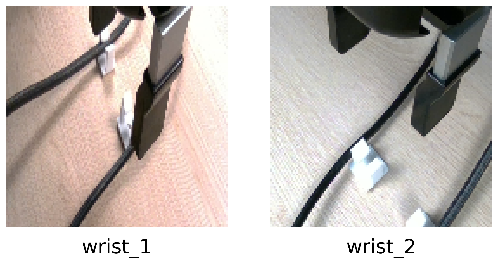
A.4.2 정책 학습 세부 사항
표 5에 이 작업에 대한 정책 학습의 추가적인 세부 사항을 보고한다.
| Parameter | Value |
| Observation space | wrist_1, wrist_2, tcp_pose, tcp_vel, tcp_f/t, gripper_pos |
| Action space | 6D twist and 1D discrete gripper control |
| Reward function | Binary classifier |
| Classifier views | wrist_1, wrist_2 |
| Classifier accuracy | 97% |
| Initial offline demonstrations | 20 |
| Environment update frequency | 10 HZ |
| Max episode length | 120 environment steps |
| Reset method | Human reset |
| Randomization range | 4 cm in x and y, 10 deg in rz |
| Proprio encoder size | 64 |
| Motion policy MLP size | 256x256 |
| Grasp critic MLP size | 256x256 |
| Total number of RL transitions | 28000 |
| Discount factor | 0.98 |
| Optimizer | Adam |
| Learning rate | 3e-4 |
| Image augmentation | Random crop |
A.5 IKEA - 측면 패널 (Side Panel)
그림 13은 IKEA 조립 작업을 위한 하드웨어 구성을 보여주며, 로봇, 카메라 배치 및 작업 배열을 나타낸다.
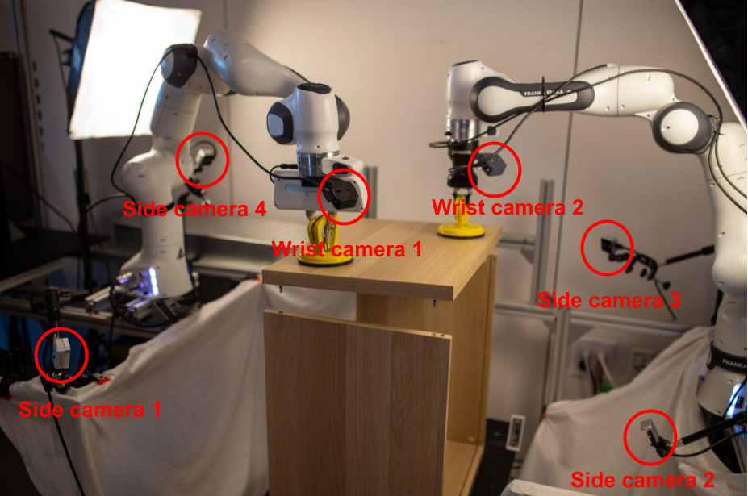
A.5.1 정책 학습 세부 사항
표 6에 이 작업에 대한 정책 학습의 추가적인 세부 사항을 보고한다.
| Parameter | Value |
| Observation space for side panel 1 | wrist_1, side_1, side_2, tcp_pose, tcp_vel, tcp_f/t |
| Observation space for side panel 2 | wrist_2, side_3, side_4, tcp_pose, tcp_vel, tcp_f/t |
| Action space | 12D twist |
| Reward function | Binary Classifier |
| Classifier views for panel 1 | side_1, side_2 |
| Classifier views for panel 2 | side_3, side_4 |
| Classifier accuracy | 97% |
| Initial offline demonstrations | 20 |
| Environment update frequency | 10 HZ |
| Max episode length | 100 environment steps |
| Reset method | Scripted reset |
| Randomization range | 8 cm in x, y, 1 deg in rz |
| Proprio encoder size | 64 |
| Policy MLP size | 256x256 |
| Total number of RL transitions for panel 1 | 31000 |
| Total number of RL transitions for panel 2 | 36000 |
| Discount factor | 0.98 |
| Optimizer | Adam |
| Learning rate | 3e-4 |
| Image augmentation | Random crop |
A.6 IKEA - 상판 패널 (Top Panel)
그림 13은 IKEA 조립 작업을 위한 하드웨어 구성을 보여주며, 로봇, 카메라 배치 및 작업 배열을 나타낸다.
A.6.1 정책 학습 세부 사항
표 7에 이 작업에 대한 정책 학습의 추가적인 세부 사항을 보고한다.
| Parameter | Value |
| Observation space | side_1, side_3, side_4, tcp_pose, tcp_vel, tcp_f/t |
| Action space | 12D twist |
| Reward function | Binary Classifier |
| Classifier views | side_1, side_3, side_4 |
| Classifier accuracy | 95% |
| Initial offline demonstrations | 20 |
| Environment update frequency | 10 HZ |
| Max episode length | 150 environment steps |
| Reset method | Scripted reset |
| Randomization range | 3 cm in x, y |
| Proprio encoder size | 64 |
| Policy MLP size | 256x256 |
| Total number of RL transitions | 18000 |
| Discount factor | 0.97 |
| Optimizer | Adam |
| Learning rate | 3e-4 |
| Image augmentation | Random crop |
A.7 차량 대시보드 조립
그림 14은 대시보드 설치 작업을 위한 하드웨어 구성을 보여주며, 로봇, 카메라 배치 및 작업 배치를 나타낸다.
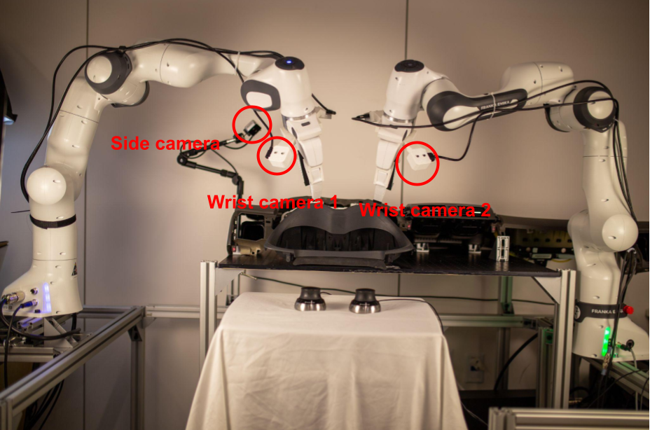
A.7.1 크롭된 이미지
그림 15에 나타난 바와 같이, 장면에서 작업과 관련된 부분에 집중할 수 있도록 이미지를 크롭(crop)하였다.
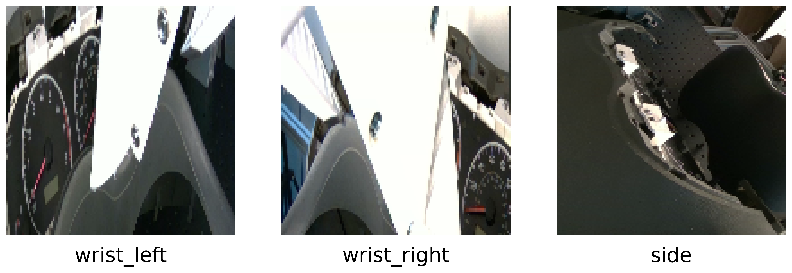
A.7.2 정책 학습 세부 사항
표 8에 이 작업에 대한 정책 학습의 추가적인 세부 사항을 보고한다.
| Parameter | Value |
| Observation space | wrist_1, wrist_2, side, tcp_pose, tcp_vel, tcp_f/t, gripper_pos |
| Action space | 12D twist and 1D discrete gripper control |
| Reward function | Binary classifier |
| Classifier views | wrist_1, wrist_2, side |
| Classifier accuracy | 98% |
| Initial offline demonstrations | 20 |
| Environment update frequency | 10 HZ |
| Max episode length | 200 environment steps |
| Reset method | Human reset |
| Randomization range | 2 cm in x and y |
| Proprio encoder size | 64 |
| Motion policy MLP size | 256x256 |
| Grasp critic MLP size | 256x256 |
| Total number of RL transitions | 36000 |
| Discount factor | 0.97 |
| Optimizer | Adam |
| Learning rate | 3e-4 |
| Image augmentation | Random crop |
A.8 물체 건네주기
그림 16은 물체 건네주기(handover) 작업을 위한 하드웨어 구성을 보여주며, 로봇, 카메라 배치 및 작업 배치를 나타낸다.
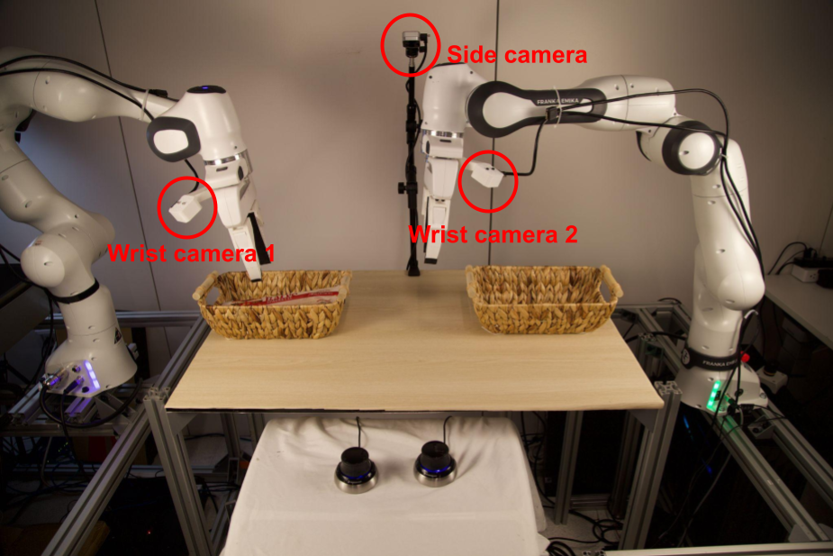
A.8.1 크롭된 이미지
그림 17에 나타난 바와 같이, 장면에서 작업과 관련된 부분에 집중할 수 있도록 이미지를 크롭하였다.
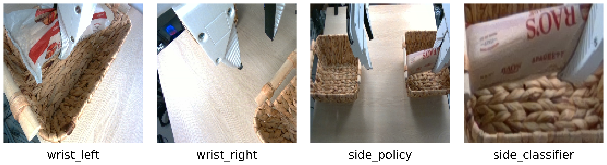
A.8.2 정책 학습 상세 정보
표 9에 이 작업에 대한 정책 학습의 추가적인 상세 정보를 보고한다.
| Parameter | Value |
| Observation space | wrist_1, wrist_2, side, tcp_pose, tcp_vel, gripper_pos |
| Action space | 12D twist and 1D discrete gripper control |
| Reward function | Binary classifier |
| Classifier views | side |
| Classifier accuracy | 99% |
| Initial offline demonstrations | 20 |
| Environment update frequency | 10 HZ |
| Max episode length | 200 environment steps |
| Reset method | Human reset |
| Randomization range | None |
| Proprio encoder size | 64 |
| Motion policy MLP size | 256x256 |
| Grasp critic MLP size | 256x256 |
| Total number of RL transitions | 43000 |
| Discount factor | 0.97 |
| Optimizer | Adam |
| Learning rate | 3e-4 |
| Image augmentation | Random crop |
A.9 타이밍 벨트 조립
그림 18은 타이밍 벨트 조립(timing belt assembly) 작업을 위한 하드웨어 구성을 보여주며, 로봇, 카메라 배치 및 작업 배치를 나타낸다.
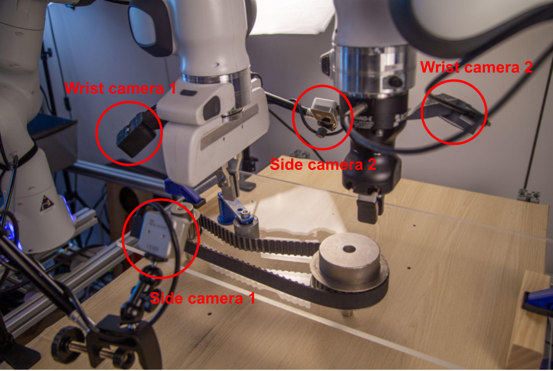
A.9.1 크롭된 이미지
그림 19에 나타난 바와 같이, 장면에서 작업과 관련된 부분에 집중할 수 있도록 이미지를 크롭(crop)하였다.
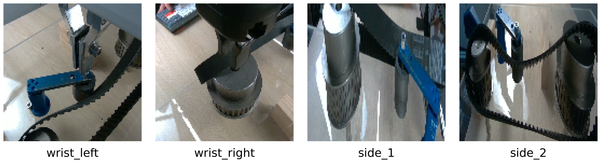
A.9.2 정책 학습 상세 정보
표 10에 이 작업에 대한 정책 학습의 추가적인 상세 정보를 보고한다.
| Parameter | Value |
| Observation space | wrist_1, wrist_2, side_1, side_2, tcp_pose, tcp_vel, tcp_f/t |
| Action space | 12D twist |
| Reward function | Binary classifier |
| Classifier views | side_1, side_2 |
| Classifier accuracy | 96% |
| Initial offline demonstrations | 20 |
| Environment update frequency | 10 HZ |
| Max episode length | 200 environment steps |
| Reset method | Human reset |
| Randomization range | 2 cm in x and y |
| Proprio encoder size | 64 |
| Policy MLP size | 256x256 |
| Total number of RL transitions | 108000 |
| Discount factor | 0.97 |
| Optimizer | Adam |
| Learning rate | 3e-4 |
| Image augmentation | Random crop |
A.10 젠가 빼기
그림 20은 젠가 빼기(Jenga whipping) 작업을 위한 하드웨어 구성을 보여주며, 로봇, 카메라 배치 및 작업 배치를 나타낸다.
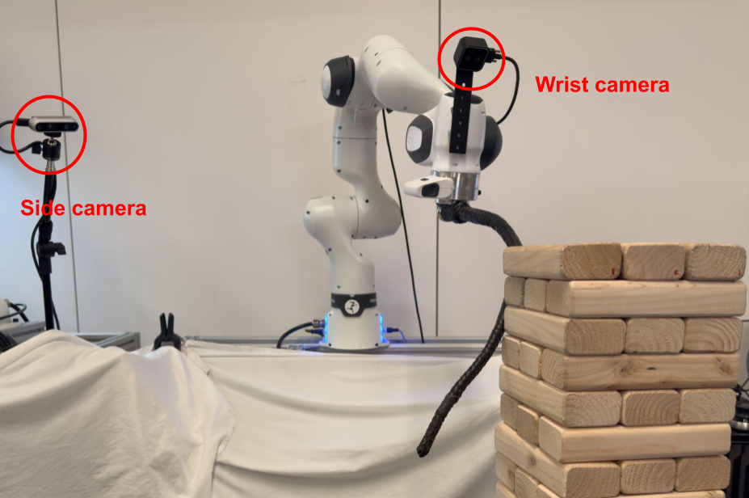
A.10.1 크롭된 이미지
그림 21에 나타난 바와 같이, 장면에서 작업과 관련된 부분에 집중할 수 있도록 이미지를 크롭하였다.
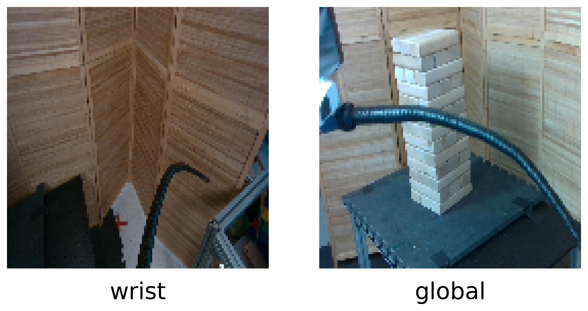
A.10.2 정책 학습 세부 사항
표 11에 이 작업에 대한 정책 학습의 추가적인 세부 사항을 보고한다.
| Parameter | Value |
| Observation space | wrist, global, tcp_pose, tcp_vel, q, dq |
| Action space | Feedforward wrench , , |
| Reward function | Human annotation in the end of an episode |
| Environment update frequency | 10 HZ |
| Max episode length | 20 environment steps |
| Reset method | Human reset |
| Randomization range | None |
| Initial offline demonstrations | 30 |
| Proprio encoder size | 64 |
| Policy MLP size | 256x256 |
| Total number of RL transitions | 10000 |
| Discount factor | 0.96, but every episode was run to maximum length |
| Optimizer | Adam |
| Learning rate | 3e-4, decayed to 3e-5 when reaching 70% success rate |
| Image augmentation | Random crop |
A.11 물체 뒤집기
그림 22은 로봇, 카메라 배치 및 작업 구성을 보여주는 물체 뒤집기(object flipping) 작업의 하드웨어 설정을 나타낸다.
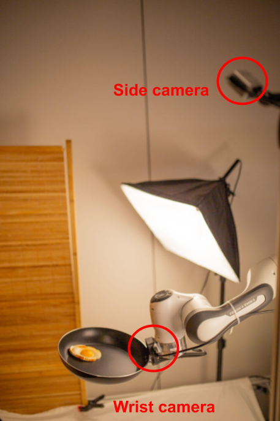
A.11.1 크롭된 이미지
그림 23에 나타난 바와 같이, 장면에서 작업과 관련된 부분에 집중할 수 있도록 이미지를 크롭(crop)하였다.
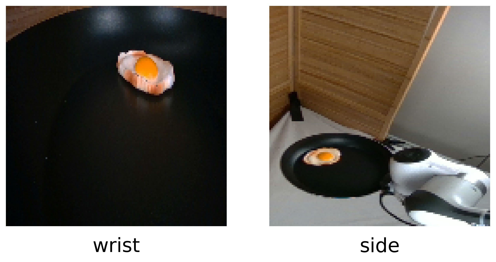
A.11.2 정책 학습 세부 사항
표 12에 이 작업에 대한 정책 학습의 추가적인 세부 사항을 보고한다.
| Parameter | Value |
| Observation space | wrist, side, tcp_pose, tcp_vel, q, dq |
| Action space | Feedforward wrench , , |
| Reward function | Binary classifier |
| Classifier views | wrist |
| Classifier accuracy | 97% |
| Initial offline demonstrations | 20 |
| Environment update frequency | 10 HZ |
| Max episode length | 100 environment steps |
| Reset method | Scripted reset |
| Randomization range | None |
| Proprio encoder size | 64 |
| Policy MLP size | 256x256 |
| Total number of RL transitions | 25000 |
| Discount factor | 0.985 |
| Optimizer | Adam |
| Learning rate | 3e-4 |
| Image augmentation | Random crop |
부록 B 보상 분류기 학습 세부 사항
보상 분류기(reward classifier)의 경우, 사전 학습된 ResNet-10 모델을 특징 추출기(feature extractor)로 사용하고 이를 2층 MLP에 연결한 후, 수집된 데이터셋에 대해 교차 엔트로피 손실(cross-entropy loss)을 사용하여 네트워크를 학습시켰다. 분류기는 3e-4의 학습률(learning rate)을 가진 Adam 옵티마이저를 사용하여 학습되었다. 총 학습 반복 횟수는 100회였다.
학습 데이터셋을 수집하기 위해, SpaceMouse를 사용하여 로봇을 원격 조종하여 작업을 수행하고 이미지와 레이블을 기록하였다. 로봇이 작업을 성공적으로 완료했을 때 SpaceMouse 버튼을 클릭하고 해당 이미지의 레이블을 1로 표시하였다. 그렇지 않은 경우에는 레이블을 0으로 표시하였다. 일부 작업에서는 분류기 성능을 향상시키기 위해 추가적인 거짓 양성(false positive) 및 거짓 음성(false negative) 샘플도 기록하였다. 독자들이 이러한 분류기를 학습시키는 방법을 이해하는 데 도움이 되도록 그림 24에 몇 가지 예시를 나타낸다.
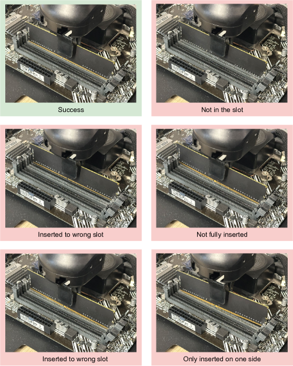
부록 C 디퓨전 정책 학습 세부 사항
이 섹션에서는 표 13에 제시된 디퓨전 정책(diffusion policy) 베이스라인을 학습시키는 데 사용된 세부 파라미터를 제공한다.
| RAM Insertion | 200 | 1 | 8 | 2 |
| Dashboard Assembly | 200 | 1 | 8 | 4 |
| Object Flipping | 200 | 1 | 1 | 1 |
부록 D 로봇 컨트롤러 및 고유 수용성 감각 정보 표현
본 섹션에서는 로봇 컨트롤러의 구현과 로봇의 고유 수용성 감각(proprioceptive) 정보 표현에 대해 자세히 설명한다.
D.1 고유 수용성 감각 정보 표현
로봇의 베이스 프레임을 이라 하자. 정책을 실행하는 번째 에피소드에 대해, 특정 타임스텝 에서 에 대해 표현된 말단 장치(end-effector) 프레임을 로 나타낸다. 여기서 , 이다. 각 에피소드마다 은 무작위화 영역을 지정하는 균등 분포에서 샘플링된다. 우리는 이러한 고유 수용성 감각 정보를 에 대해 표현하고자 한다. 이를 통해 로봇의 말단 장치와 목표물 사이의 상대적인 공간적 거리가 일정하게 유지된다면, 정책을 새로운 위치에도 적용할 수 있게 된다. 이 접근 방식은 기준 프레임 내의 특정 전역 위치에 과적합되는 것을 방지한다. 우리는 다음과 같은 동차 변환(homogeneous transformation)을 적용하여 이를 달성한다.
여기서 프레임 과 사이의 동차 변환 행렬을 나타내기 위해 을 사용한다. 우리는 에서 추출한 위치 및 회전 정보를 정책에 입력한다. 여기서 프레임 와 사이의 동차 변환 행렬을 나타내기 위해 를 사용하며, 다음과 같이 정의된다:
| (5) |
대부분의 작업에서 정책은 6자유도(6 DoF) 트위스트(twist) 동작을 생성하며, 이는 현재 관측을 수신하는 기준 프레임인 으로 표현된다. 수학적으로, 6자유도 트위스트 동작 은 타임스텝 에서 프레임 로 표현된다. 베이스 프레임 로 표현된 동작 를 요구하는 로봇의 제어 소프트웨어와 인터페이스하기 위해, 다음과 같이 수반 맵핑(adjoint mapping)을 적용한다:
여기서 은 다음과 같이 정의되는 동차 변환 의 함수이다:
| (6) |
두 가지 동적 조작 작업의 경우, 정책은 3자유도 피드포워드 렌치(wrench) 동작을 생성하며, 이 또한 현재 관측을 수신하는 기준 프레임인 으로 표현된다. 이는 하위 수준 로봇 컨트롤러에 설정값(setpoint)으로 전송된 다음, 현재 타임스텝 에서의 자코비안 행렬(Jacobian matrix)의 전치 행렬을 곱하여 실행을 위한 관절 토크로 변환된다.
D.2 로봇 컨트롤러
대부분의 작업에서 하위 수준 로봇 컨트롤러는 1000 Hz로 실행되는 임피던스 컨트롤러(impedance controller)이며, 정책에 의해 계산된 10 Hz 설정값을 수신한다. Luo et al. [2024a]에서 논의된 바와 같이, 접촉이 많은 대부분의 조작 작업에서 학습 과정의 안정성을 보장하기 위해 이에 대한 추가적인 처리를 수행한다. 피드포워드 항이 없는 전형적인 임피던스 컨트롤러를 고려하자:
| (7) |
여기서 , 은 측정된 포즈(pose)이고, 는 상위 컨트롤러에 의해 계산된 목표 포즈이며, 은 원하는 피드포워드 힘, 는 코리올리 힘(Coriolis force)이다. 이 목표는 자코비안 전치 행렬을 곱하고 영공간(nullspace) 토크로 오프셋함으로써 관절 공간 토크로 변환된다. 이는 강성 계수가 이고 감쇠 계수가 인, 에 의해 설정된 평형 상태 주변의 스프링-감쇠기 시스템처럼 작동한다. 위에서 설명한 바와 같이, 이 시스템은 이 현재 포즈에서 멀리 떨어져 있을 때 큰 힘을 발생시키며, 이는 로봇 팔이 무언가와 접촉할 때 강한 충돌이나 손상을 초래할 수 있다. 따라서 이로 인해 발생하는 상호작용 힘을 제한하는 것이 매우 중요하다. 그러나 게인(gain)을 직접적으로 줄이면 컨트롤러의 정확도가 저하된다. 따라서 를 제한하여 이 되도록 해야 하며, 그러면 스프링-감쇠기 시스템에서 발생하는 힘은 로 제한된다. 여기서 는 제어 주파수이다.
두 가지 동적 조작 작업의 경우, 우리는 1000 Hz로 피드포워드 렌치 컨트롤러를 실행하며, 이는 정책에 의해 계산된 10 Hz 설정값을 수신한다. 이는 자코비안 전치 행렬을 곱하고 영공간 토크로 오프셋함으로써 원하는 렌치를 관절 토크로 변환한다.
부록 E 정책 학습 그래프
본 섹션에서는 모든 작업에 대한 HIL-SERL 정책 학습의 추가 그래프를 제공한다.
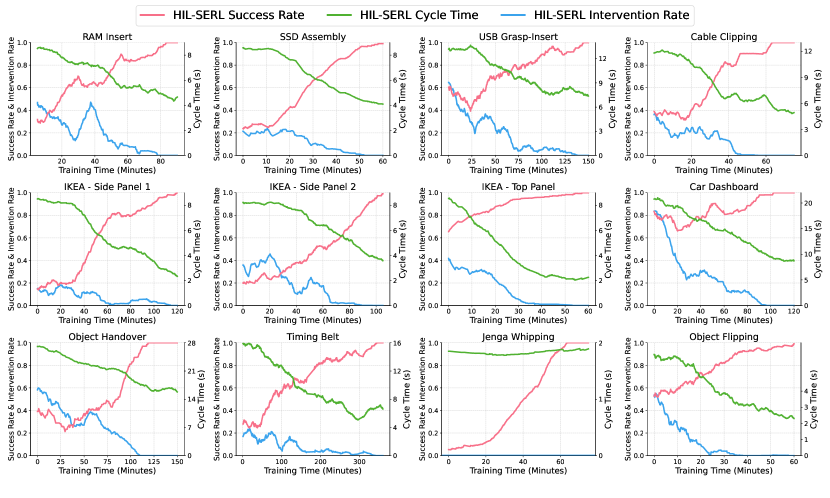